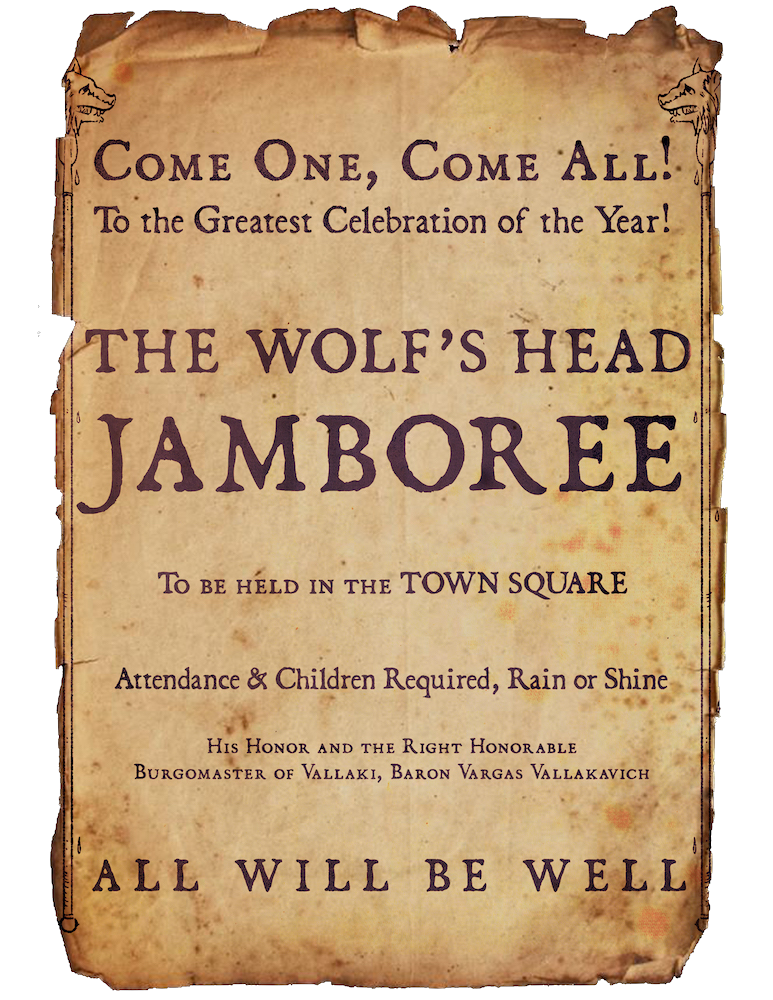
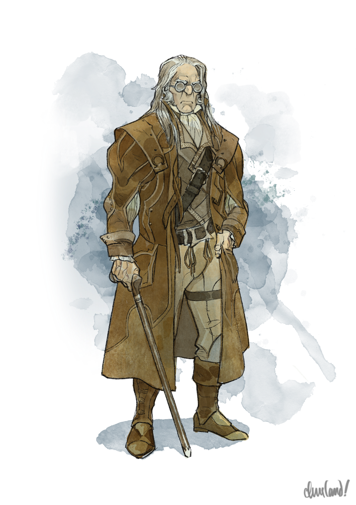
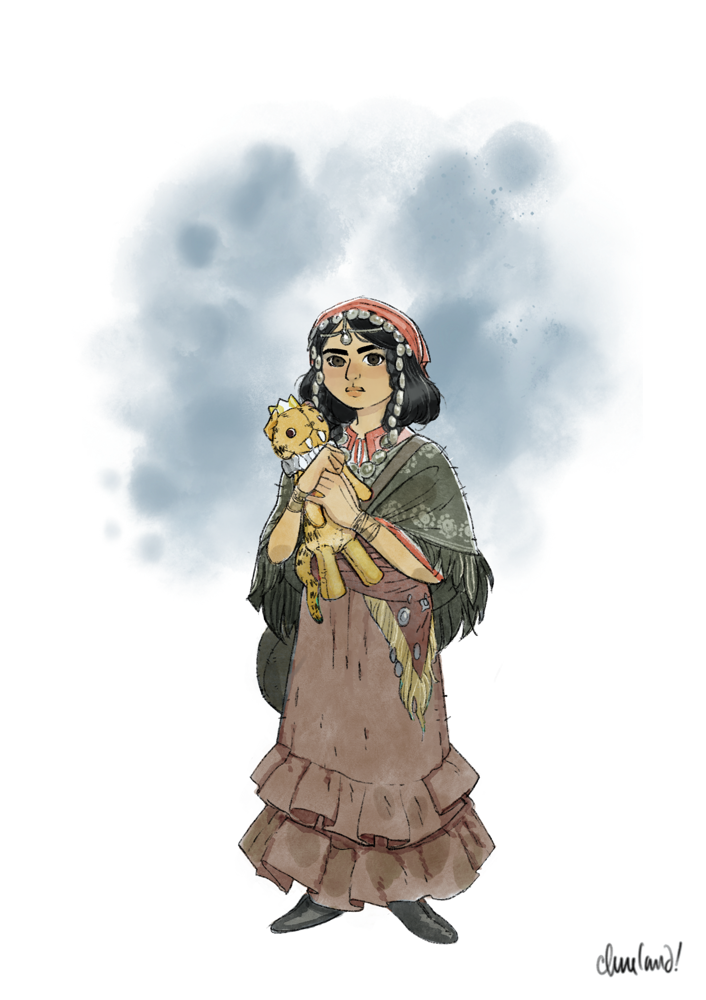
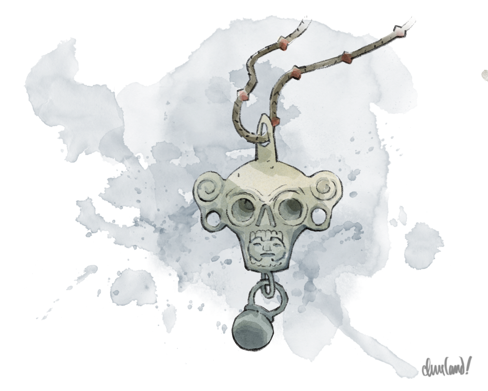

_Uma aventura para cinco personagens de 4º nível._
Neste arco, a pedido de Madam Eva, os jogadores visitam a Blinsky Toys, o lar do brinquedeiro residente de Vallaki, para comprar um presente de aniversário para Arabelle, a sobrinha-bisneta de Eva. Ali, os jogadores descobrem novas informações sobre o mestre de cerimônias viajante Rictavio e sobre Izek Strazni, o brutamontes que serve de capanga ao Barão.
Depois de conseguir um brinquedo para Arabelle, os jogadores visitam o acampamento Vistani situado a pouca distância das muralhas de Vallaki. Lá, podem conhecer os líderes do acampamento: Luvash e Arrigal, respectivamente pai e tio de Arabelle.
Quando os jogadores descobrem que Arabelle desapareceu há pouco tempo, Luvash lhes pede que recuperem uma pista do local do desaparecimento — um estranho anel de sinete de platina — com Kasimir Velikov, um dos elfos do crepúsculo cujas choupanas cercam o acampamento. Luvash acredita que o anel possa ser a chave para encontrar sua filha, e promete aos jogadores uma fortuna em tesouro se eles pesquisarem seus segredos na biblioteca pessoal do Barão, em Vallaki, e descobrirem o paradeiro de Arabelle.
Depois de obter o anel com Kasimir e retornar a Vallaki, os jogadores precisam conseguir acesso à biblioteca pessoal do Barão Vargas Vallakovich — seja pela astúcia, pela diplomacia ou pela dissimulação. Uma vez lá dentro, logo são surpreendidos pelo filho do Barão, Victor Vallakovich, cujo grimório traz o mesmo sigilo do anel de sinete.
Em troca da promessa dos jogadores de trazerem de volta quaisquer relíquias que encontrem por lá — incluindo, se possível, um cajado de mago de verdade —, Victor lhes conta que o sigilo era o símbolo pessoal do arquimago Khazan, cuja torre abandonada se ergue às margens do Lago Baratok. Embora Victor não saiba como chegar até lá, ele pode indicar Szoldar Szoldarovich, um caçador de lobos de Vallaki que conhece bem a Floresta Svalich.
Os jogadores podem contratar Szoldar como guia ou simplesmente lhe pagar uma bebida para conseguir o caminho até o Lago Baratok. Ao chegarem ao lago, podem encontrar a carroça atolada da caçadora de monstros Vistana Ezmerelda d'Avenir, bem como a antiga torre do próprio arquimago Khazan. Depois de vencer a porta magicamente trancada da torre, os jogadores encontram pistas que revelam o destino de Arabelle — e sugerem que o mestre de cerimônias Rictavio não é bem o que aparenta.
Se os jogadores retornarem a Vallaki, confrontarem Rictavio e o convencerem de que são amigos, e não inimigos, ele revela a contragosto sua identidade e os conduz ao esconderijo de Arabelle: a carroça de carnaval guardada no Arasek Stockyard. Sem que os jogadores saibam, porém, Arrigal, o tio de Arabelle, os seguiu até Vallaki — e quando Arrigal se revela e exige a devolução da menina, os jogadores precisam decidir em qual dos dois homens confiar. E mesmo depois que a tensão se dissipa, Arabelle profere uma profecia sombria e enigmática . . .
Quando Strahd recebeu a mais recente premonição de Madam Eva, ele descobriu que não poderia controlar o poder bruto dos Fanes sem um símbolo da divindade das Rozanas. Strahd descobriu também dois meios de obter tal símbolo: sacrificando uma lembrança de seu passado na Muralha Sussurrante, junto a Yester Hill, ou capturando uma descendente mortal que carregasse uma centelha divina das próprias Três Senhoras. A preferência de Strahd é, evidentemente, a segunda.
Strahd sabe que uma descendente de uma das Senhoras vive em algum lugar do vale, e sabe quais sinais o levarão até ela. Para tanto, despachou seus espiões por toda a Barovia à sua procura. Embora Strahd não faça ideia disso, seu copeiro e mais recente consorte — o vampiro servo Escher — tomou para si a tarefa de também perseguir a descendente.
O Acordo de Escher e Yan. Embora Escher tenha se juntado à corte de Strahd por vontade própria, ele anda ansioso, temendo que Strahd logo o descarte — sobretudo se as noivas vampíricas de Strahd, Ludmilla, Anastrasya e Volenta, conseguirem reconquistar seu favor. Assim, quando um Vistani chamado Yan — um dos muitos espiões de Strahd — visitou o Castelo Ravenloft para prestar relatório, Escher fez um acordo com ele. Yan concordou em ajudar a localizar a descendente das Senhoras; em troca, assim que Escher se tornasse o consorte favorito de Strahd, ele proveria Yan de riquezas e poder.
O Desaparecimento de Arabelle. Yan retornou ao acampamento Vistani nos arredores de Vallaki — e não demorou muito para que achasse ouro. Ao perceber que Arabelle, a filha de Luvash, apresentava muitos dos sinais que Escher havia descrito, Yan convocou Escher ao acampamento e se preparou para agir.
Alexei, um jovem Vistani e primo mais velho de Arabelle, tinha por hábito vigiá-la enquanto seu pai, Luvash, trabalhava. Enquanto Arabelle brincava na mata perto do acampamento, Yan procurou Alexei e dividiu com ele fartas quantidades de vinho — mais do que o bastante para deixá-lo completamente bêbado. Assim que Alexei adormeceu, Yan agarrou Arabelle, amordaçou-a e a enfiou dentro de um saco.
Yan agiu depressa para levar Arabelle ao ponto de encontro combinado com Escher: um trecho discreto às margens do Rio Luna, ali perto. Escher, que havia tomado o círculo de teleporte até Berez, transformou-se em morcego e voou até o ponto de encontro, onde topou com Yan. Yan encontrou Escher ali, como esperado — mas, no momento em que Escher buscava o pagamento, o desastre aconteceu.
O Dr. Rudolph van Richten, o caçador de vampiros que fugira do Castelo Ravenloft após o despertar de Strahd, estava hospedado ali perto, na velha torre do Lago Baratok. Naquele dia, Van Richten vasculhava os capinzais pantanosos da margem do rio em busca de certa erva medicinal que lhe havia acabado — e foi ali, agachado e escondido no mato rasteiro, que ele notou o encontro clandestino de Yan e Escher.
Em circunstâncias normais, Van Richten jamais revelaria sua localização — nem mesmo diante de um dos servos imundos de Strahd — e nunca arriscaria queimar seu disfarce. Contudo, quando percebeu que o saco de Yan se mexia e ouviu o choramingo de uma criança lá dentro, a mente de Van Richten voltou de um golpe ao sequestro e à morte de seu falecido filho, Erasmus — e seu corpo se moveu sem pensar.
Em segundos, Yan estava morto e um Escher ferido fugia rumo ao Castelo Ravenloft. Van Richten libertou Arabelle às pressas de suas amarras e ficou pasmo ao ver que ela mesma era uma jovem Vistana. Quando Van Richten usou seu talismã de ecos para conjurar comunhão com os mortos (speak with dead) sobre a cabeça decepada de Yan e ficou sabendo do plano de Escher, ele e Arabelle compreenderam que o acampamento Vistani não era mais seguro diante dos espiões de Strahd.
Levando consigo a cabeça de Yan para impedir qualquer investigação e subindo o Rio Luna a vau para despistar os batedores dos elfos do crepúsculo, Van Richten e Arabelle voltaram à Capítulo 11: Van Richten's Tower (p. 167) para bolar um plano. Permanecer na torre era inviável — um dos servos de Strahd agora conhecia o rosto e a localização de Arabelle, e Van Richten deduziu que Strahd certamente tentaria videnciá-la. Embora o campo antimagia da torre fosse atrapalhar os esforços de Strahd, ela também seria o primeiro lugar em que ele procuraria quando sua magia de vidência inevitavelmente falhasse.
O próprio Van Richten possuía um amuleto à prova de detecção e localização para escapar do olhar vigilante de Strahd — além de um amuleto reserva que sua aluna, Ezmerelda d'Avenir, lhe devolvera quando os dois seguiram caminhos separados. Os dois amuletos bastariam para protegê-los da magia de Strahd, mas Arabelle ainda precisava de um lugar para viver e dormir longe dos olhos dos espiões de Strahd — ao menos até que Van Richten encontrasse uma alternativa melhor.
Passando Despercebidos. A vizinha cidade de Vallaki, com sua população grande e agitada, poderia ser um lugar bem melhor para os dois se perderem no meio da multidão. Ainda assim, embora Van Richten pudesse se disfarçar com seu chapéu do disfarce, ele não tinha disfarce algum para Arabelle, e qualquer tentativa de transportá-la para dentro ou pelos arredores de Vallaki correria o risco de alertar os espiões de Strahd.
Felizmente, Van Richten ainda tinha uma velha carroça Vistani escondida na mata, dos tempos em que entrara pela primeira vez na Barovia — uma com espaço de sobra para Arabelle se acomodar. E como os Vistani não eram bem-vindos em Vallaki, Van Richten decidiu que um disfarce diferente — um que lhes permitisse se esconder à vista de todos — poderia servir igualmente bem.
Disfarçando-se de Yan, Van Richten usou os conselhos de Arabelle para se infiltrar no próprio acampamento Vistani, furtando várias das tintas coloridas que os Vistani usavam para decorar suas carroças. Naquela noite, nascia o Carnaval de Maravilhas de Rictavio — e o próprio Van Richten se tornou Rictavio, mestre de cerimônias do "carnaval".
Enquanto Van Richten trabalhava, Arabelle — que havia guardado no bolso uma cópia da carta de Tarokka do Encapuzado depois de uma premonição vaga naquela manhã — sentiu sua Visão interior faiscar mais uma vez. Sem entender bem o motivo, escondeu a carta dentro do travesseiro, junto de uma adaga prateada que Van Richten lhe dera, deixando sua pulseira de contas enrolada em volta de ambas.
Pela manhã, Van Richten escondeu Arabelle no fundo da carroça, que atrelou a Drusilla, sua égua, e a conduziu até Vallaki. Lá, fechou negócio com Gunther e Yelena Arasek para guardar a carroça (ainda com Arabelle dentro) no Arasek Stockyard, e se instalou no quarto de hóspedes privativo da Blue Water Inn.
As Consequências do Sequestro. A ausência de Arabelle não passou despercebida por muito tempo. Ao anoitecer do dia em que fora sequestrada, Luvash já havia descoberto Alexei de ressaca e ficara sabendo do sumiço da filha. Os Vistani e os elfos do crepúsculo se espalharam pela mata das redondezas, procurando em vão por qualquer sinal da menina desaparecida.
Quase no mesmo instante em que Van Richten e Arabelle cruzavam os portões de Vallaki, um elfo do crepúsculo chamado Savid encontrou o corpo decapitado de Yan entre os juncos do Rio Luna, em meio a sinais de luta. Savid encontrou também um berloque estranho sobre a grama ensanguentada: um anel de sinete de platina gravado com um sigilo esquisito. Ele o levou de volta a Luvash, que ordenou a Savid que o entregasse a Kasimir Velikov — líder e erudito dos elfos do crepúsculo — para exame, assim que Kasimir retornasse. Luvash continuou a busca por Arabelle, embora seus esforços pessoais tenham chegado a um fim sangrento e brutal quando sua perna direita ficou presa numa armadilha de lobo bem escondida.
Enquanto isso, Van Richten planeja levar comida a Arabelle, vinda das cozinhas da Blue Water Inn, uma vez a cada manhã e a cada noite, alegando aos curiosos xeretas que está apenas entregando petiscos ao "feroz tigre dente-de-sabre" que mantém trancado em sua carroça. A mentira de Van Richten, porém, é mais verdadeira do que ele imagina. A carroça é assombrada pelo fantasma bondoso de seu filho, Erasmus van Richten (veja Van Richten's Guide to Ravenloft, p. 180) — e Erasmus, em sua exuberância juvenil, já espantou curiosos mais de uma vez sacudindo a carroça e arranhando seu interior de madeira.
Tanto Van Richten quanto Arabelle sabem que essa é, na melhor das hipóteses, uma solução temporária. Van Richten, que ouviu falar pela primeira vez dos misteriosos Keepers of the Feather durante a rebelião de Doru, investiga discretamente seus membros, conforme descrito em N2c. Taproom (p. 100). Ele espera determinar se a sociedade secreta é amiga ou inimiga — e, se amiga, se seus agentes podem ser dignos de confiança.
E1. Blinsky Toys
Esta cena acontece no Capítulo 5: Área N7.
Depois de receberem o pedido de Madam Eva em Arco C - Adentrando o Vale para comprar e entregar um brinquedo para sua sobrinha-bisneta, Arabelle, os jogadores podem descobrir o caminho até a loja de brinquedos local de Vallaki, a Blinsky Toys, perguntando a Urwin Martikov, Danika Dorakova ou à maioria dos vallakianos nativos. A Blinsky Toys agora fica na extremidade norte da praça central de Vallaki, que é como descrita em N8. Town Square (p. 119).
Informações de Interpretação Ressonância. Blinsky deve inspirar diversão com seu sotaque, suas roupas e sua estética mórbida, ternura por sua solidão e sinceridade, e compaixão por seu terror de Izek.
Emoções. Blinsky costuma sentir alegria, medo, ansiedade, solidão, júbilo ou melancolia.
Motivações. Blinsky quer usar seus brinquedos macabros para levar alegria às crianças da Barovia e suceder Fritz von Weerg como o maior brinquedeiro da história.
Inspirações. Ao interpretar Blinsky, canalize Olaf (Frozen), Rúbeo Hagrid (Harry Potter) e Gepeto (Pinóquio).
Informações de Personagem
Persona. Para o mundo, Gadof Blinsky é um brinquedeiro alegre com um gosto pelo macabro. Para aqueles em quem confia, Blinsky é um homem solitário e ansioso, com medo de que seu trabalho nunca seja bom o bastante para conquistar o amor de seus clientes.
Moral. Numa briga, Blinsky imploraria por paz, tropeçando nos próprios pés e balbuciando por misericórdia enquanto procura uma oportunidade de fugir.
Relacionamentos. Blinsky é dono de Piccolo, um macaco de estimação que lhe foi dado por "Alanik Ray", um estudioso viajante (e um dos disfarces de Rudolph van Richten), pouco depois da rebelião de Doru. Blinsky também fabrica bonecas parecidas com Ireena Kolyana para Izek Strazni, e recebe uma modesta pensão para criar decorações para os festivais semanais do Barão Vallakovich. Além disso, Blinsky é o criador da perna prostética de Ezmerelda d'Avenir.
A Blinsky Toys é como descrita em N7. Blinsky Toys (p. 118). Enquanto os personagens exploram a loja, Blinsky lhes conta com entusiasmo sobre sua inspiração para fazer brinquedos: o lendário brinquedeiro Fritz von Weerg e sua maior invenção, perdida com o passar das eras — um homem de engrenagens que, segundo dizem, jaz em algum lugar do Castelo Ravenloft.
Se os jogadores perguntarem a Blinsky sobre a boneca parecida com Ireena Kolyana (veja Creepy Toys, p. 118), ele insiste, aflito, que ela não está à venda e lhes pede que escolham outro brinquedo. Se os jogadores exigirem uma explicação para a semelhança inquietante, podem arrancar de um Blinsky amedrontado o que ele sabe com um teste de Carisma (Persuasão ou Intimidação) CD 10 bem-sucedido, ou tomando a boneca para si. Blinsky está claramente aterrorizado com a ira de Izek, e fará qualquer coisa para garantir que a boneca seja entregue no prazo.
Se os jogadores perguntarem a Blinsky sobre Piccolo, ele pode informá-los de que recebeu o macaco há pouco mais de três meses, de um estudioso viajante chamado Alanik Ray.
Quando os personagens saem da Blinsky Toys, podem ver Izek Strazni e dois guardas chegarem para afixar novas proclamações, conforme descrito em N8. Town Square (p. 119).

"Wolf's Head Jamboree", de Caleb Cleveland. Apoie-o no Patreon!
E2. Acampamento Vistani
Esta cena acontece no Capítulo 5: Área N9.
O caminho de Vallaki até o Acampamento Vistani é como descrito em N9. Vistani Camp (p. 119). A jornada tem cerca de oitocentos metros e leva aproximadamente dez minutos.
Quando os jogadores chegam ao acampamento, podem escolher entre subir a colina até o círculo de carroças no topo (veja E2a. O Acampamento Vistani) ou conversar com um dos elfos do crepúsculo que guardam as choupanas na base da colina (veja E2b. Choupanas dos elfos do crepúsculo).
E2a. O Acampamento Vistani
Entrando no Acampamento Vistani
Os Vistani são em grande parte como descritos em Roleplaying the Vistani and the Elves (p. 119), e o acampamento em grande parte como descrito em N9c. Vistani Tent, N9d. Horses, N9e. Luvash's Wagon, N9f. Wagon of Sleeping Vistani, N9g. Wagon of Gambling Vistani, N9h. Vistani Family Wagon, and N9i. Vistani Treasure Wagon (pp. 121-23).
Quando os jogadores entram na tenda pela primeira vez, modifique o texto descritivo da seguinte forma:
Ao se abaixarem para entrar na tenda, vocês ouvem o som de madeira lascando e cerâmica se despedaçando. Piscando em meio à névoa de fumaça que preenche o interior, vocês veem três fogueiras crepitando baixo, reduzidas a brasas. Ao todo, seis Vistani estão sentados em volta das fogueiras, observando a origem do tumulto com olhares solenes e compadecidos.
Um jovem sem camisa está ajoelhado sobre a grama morta perto do centro da tenda, os olhos baixos e o rosto pálido. Ao lado dele, uma caixa de madeira quebrada repousa em meio a uma pilha de cacos de cerâmica, vários dos quais ainda balançam com a força do impacto.
A uns quatro metros do rapaz ajoelhado está de pé um homem mais velho e mais corpulento, vestindo armadura de couro batido e ostentando uma barba espessa e bem aparada. Seus olhos estão injetados de sangue, e sua mão direita treme. Ele parece apoiar o peso do corpo numa muleta improvisada de madeira; olhando para baixo, vocês veem que sua perna direita, abaixo do joelho, está envolta em bandagens manchadas de sangue.
"Você devia mantê-la em segurança!", o homem corpulento brada com a voz rouca. Ele se vira num rodopio, a mão agarrando às cegas como se buscasse outra coisa para arremessar. O suor brota em sua testa, e ele engole em seco um soluço de fúria. "Minha menininha! E agora—"
Ele oscila, sem firmeza — e tropeça. Num piscar de olhos, um terceiro homem, também trajado em couro batido e usando um cavanhaque bem aparado, sai de sua sombra e ampara o homem corpulento pelo ombro antes que ele caia. "Calma, irmão", murmura o terceiro homem. "Você perdeu muito sangue." Ele ergue os olhos e os avista, a testa se franzindo de modo quase imperceptível. "E, ao que parece, temos companhia."
O homem sem camisa é Alexei. O homem corpulento é Luvash. O homem do cavanhaque é Arrigal.
Se os jogadores não tomarem a palavra primeiro, Luvash os saúda com desconfiança e — recostando-se na muleta para disfarçar qualquer fraqueza — pergunta o que desejam. Se os jogadores contarem que vieram entregar o presente de Madam Eva, Luvash lhes diz que Arabelle — sua filha — desapareceu há pouco tempo.
Informações de Interpretação Ressonância. Luvash deve fazer os jogadores sentirem compaixão por seu luto, ternura por sua dedicação à filha, irritação com sua teimosia e um leve desconforto com seu temperamento explosivo.
Emoções. Luvash costuma sentir raiva, melancolia, ansiedade, culpa, desespero, frustração, júbilo, contentamento, diversão ou gratidão.
Motivações. Luvash quer garantir que sua filha, Arabelle, esteja segura e amada, e que as famílias do acampamento Vistani possam florescer e prosperar.
Inspirações. Ao interpretar Luvash, canalize Boromir (O Senhor dos Anéis), Robert Baratheon (A Guerra dos Tronos), Bob Parr (Os Incríveis) e Wolverine (X-Men).
Informações de Personagem Persona. Para o mundo, Luvash é um brigão rude e teimoso, de espírito impaciente e coração de ouro. Para aqueles em quem confia, Luvash é um pai ferozmente devotado, de compaixão suave e gentil — mas quase soterrado pela angústia com a segurança da filha.
Moral. Numa briga, Luvash sacaria a lâmina para proteger seu povo sem um instante de hesitação, mas a embainharia depressa se isso fosse necessário para manter Arabelle em segurança.
Relacionamentos. Luvash é o irmão mais velho de Arrigal, um dos espiões de Strahd. (Luvash não sabe que Arrigal é espião de Strahd.) Luvash também é o pai de Arabelle, cuja mãe era uma das descendentes de Madam Eva, e — junto com Arrigal — um dos dois líderes do acampamento Vistani nos arredores de Vallaki.
Informações de Interpretação Ressonância. Arrigal deve fazer os jogadores se sentirem insultados por sua leve condescendência, incomodados por sua curiosidade intensa e por seu verniz de cortesia risonha e — quando ficarem sabendo — ao mesmo tempo enojados e compadecidos por sua decisão de servir a Strahd.
Emoções. Arrigal costuma sentir curiosidade, desconfiança, frustração, ressentimento, tranquilidade ou divertimento.
Motivações. Arrigal quer proteger sua família e assegurar um futuro luminoso para os Vistani da Barovia, livre dos rancores dos barovianos de visão estreita — objetivo que ele pretende alcançar servindo a Strahd.
Inspirações. Ao interpretar Arrigal, canalize Loki (Thor), Mindinho (A Guerra dos Tronos) e Hannibal Lecter (O Silêncio dos Inocentes).
Informações de Personagem Persona. Para o mundo, Arrigal é o executor e conselheiro de Luvash: um homem cauteloso, risonho e curioso, que prefere se manter distante dos problemas alheios. Para aqueles em quem confia, Arrigal é um tio dedicado, um defensor feroz dos Vistani e um duelista com um arsenal de habilidades letais. Só Arrigal sabe que serve fielmente a Strahd von Zarovich como um de seus espiões — e que iria longe para cumprir a vontade do vampiro em troca da prosperidade de sua família e de seu povo.
Moral. Numa briga, Arrigal agiria com astúcia impiedosa, recuando quando necessário antes de golpear das sombras, usando engano, manipulação ou golpes sujos para garantir vantagem.
Relacionamentos. Arrigal é o irmão mais novo de Luvash e tio de Arabelle. Também é espião de Strahd e presta relatórios regulares a Anastrasya, uma das noivas vampíricas de Strahd.
Luvash pode compartilhar as seguintes informações com os jogadores:
- Um dia antes da chegada dos jogadores a Vallaki, Alexei, sobrinho de Luvash, ficou encarregado de vigiar Arabelle enquanto ela brincava na mata próxima, enquanto Luvash mediava uma disputa entre duas famílias Vistani.
- Em vez de vigiar Arabelle, Alexei se embebedou de vinho. Quando acordou, Arabelle havia sumido.
- Alexei afirma que Yan, um membro antigo do acampamento, lhe deu o vinho e havia desaparecido quando Alexei despertou.
- Luvash liderou a busca por Arabelle, acompanhado de mais de uma dúzia de Vistani e quase outros tantos batedores elfos do crepúsculo das choupanas ao pé da colina. O próprio Luvash teve de voltar ao acampamento depois que sua perna direita ficou presa numa armadilha de lobo, deixando-o ferido demais para caminhar.
- As equipes de busca ainda não encontraram Arabelle. Contudo, um elfo do crepúsculo chamado Savid encontrou o corpo decapitado de Yan caído na grama ensanguentada perto do Rio Luna, cercado por sinais de luta.
- Savid encontrou também um estranho anel de sinete caído na grama, que parecia ter sido derrubado durante a briga. Luvash o entregou a Kasimir, líder e maior erudito dos elfos do crepúsculo, para identificação, mas não recebeu nenhuma notícia ou informação útil.
Luvash acredita que o sigilo no anel de sinete possa levá-lo até o paradeiro de Arabelle. Embora Kasimir não tenha conseguido decifrá-lo, corre o boato de que o Barão Vargas Vallakovich, de Vallaki, possui uma biblioteca impressionante de livros, que poderia guardar a chave para identificar o anel. Os Vistani e os elfos do crepúsculo, no entanto, estão proibidos de entrar na cidade.
Luvash pede aos jogadores que recuperem o anel com Kasimir e depois pesquisem seu sigilo na biblioteca do Barão Vallakovich. Se os jogadores voltarem até ele com informações concretas sobre o paradeiro de Arabelle — ou, melhor ainda, com a própria Arabelle —, Luvash promete lhes dar uma recompensa valiosa. (Se pressionado, Luvash pode prometer aos jogadores a soma de 500 po — ou um sortimento de tesouros de valor igual ou maior.)
Se os jogadores aceitarem a missão de Luvash, ele os encaminha às E2b. Choupanas dos elfos do crepúsculo para se encontrarem com Kasimir.
Se os jogadores se oferecerem para rastrear Arabelle a partir do lugar onde ela desapareceu, Luvash pode encaminhá-los a um ponto próximo ao Rio Luna, cerca de um quilômetro e meio ao sul de P. Luna River Crossroads (p. 40). No caminho até lá, os jogadores passam por E5a. A Ponte do Rio Luna e E5b. A Encruzilhada do Rio Luna.
Um jogador que vasculhe a área onde Arabelle desapareceu e obtenha sucesso num teste de Sabedoria (Sobrevivência) CD 15 consegue identificar três conjuntos de pegadas de tamanho adulto na grama enlameada ali perto. Um dos conjuntos vem do norte e termina na grama; o segundo vem do norte, depois segue para sudoeste e termina na base de um tronco de árvore a nove metros de distância; e o terceiro vem da mata a oeste e continua rumo à margem do rio, onde termina. Nenhum rastro continua do lado oposto do rio.
Um jogador que examine as pegadas e obtenha sucesso num teste de Inteligência (Investigação) CD 15 consegue discernir, pelo padrão de movimento e pelas manchas de sangue na grama, que o primeiro e o terceiro indivíduos lutaram brevemente, e o primeiro morreu. O segundo indivíduo então fugiu, sumindo na copa das árvores. O terceiro indivíduo, carregando algo pesado — talvez o peso de uma criança —, entrou no rio a vau.
Como o rio levou embora qualquer vestígio, o rastro do terceiro indivíduo não pode ser seguido além desse ponto. (Vasculhar toda a extensão do Rio Luna em busca do ponto exato em que o terceiro indivíduo saiu da água é tarefa de tolo, e impossível.)
E2b. Choupanas dos elfos do crepúsculo
As choupanas dos elfos do crepúsculo são como descritas em N9b. Dusk Elf Hovels (p. 121). Os próprios elfos do crepúsculo são como descritos em Roleplaying the Vistani and the Elves (p. 119). Se os jogadores se aproximarem de um dos guardas e perguntarem sobre os Vistani, o guarda os encaminha ao círculo de carroças no topo da colina.
Se os jogadores perguntarem sobre a missão de Luvash, o guarda os encaminha à choupana de Kasimir. O guarda observa, contudo, que Kasimir retornou há pouco de uma jornada longa e árdua, e que os jogadores não devem incomodá-lo além do razoavelmente necessário.
E2c. A Choupana de Kasimir
Esta cena acontece no Capítulo 5: Área N9a.
A choupana de Kasimir é em grande parte como descrita em N9a. Kasimir's Hovel (p. 121). Se os jogadores entrarem nela, leia:
Vocês entram num vestíbulo pequeno e acolhedor, vários graus mais quente do que a névoa gélida lá fora. As paredes desse cômodo miúdo estão decoradas com esboços e retratos pendurados de elfos de pele escura, altivos e de aparência sábia, com torres esculpidas em madeira escura erguidas sobre árvores, e com representações artísticas de constelações e corpos celestes. Duas cortinas de tecido marrom-escuro escondem a entrada para outro cômodo mais adiante.
Para além das cortinas há um cômodo maior, iluminado e aquecido por uma lareira na extremidade norte. Um velho tapete verde está estendido de frente para o fogo, logo ao lado de uma antiga mesa de madeira ladeada por várias cadeiras. A parede da esquerda desse aposento confortável exibe uma dúzia de nichos com livros encadernados em couro e pequenas estatuetas de madeira de figuras élficas, enquanto a parede da direita ostenta uma tapeçaria desbotada de uma floresta viçosa e bela sob um sol de meio-dia.
Os jogadores encontram Kasimir sentado no tapete verde de frente para o fogo, meditando. Ele é como descrito em Kasimir Velikov (p. 232), mas exibe um olho roxo recente e vários cortes na face.
 "Kasimir Velikov", de Caleb Cleveland. Apoie-o no Patreon!
"Kasimir Velikov", de Caleb Cleveland. Apoie-o no Patreon!
Informações de Interpretação Ressonância. Kasimir deve fazer os jogadores se sentirem gratos por sua competência e por seu interesse genuíno em ajudá-los, levemente insultados por sua ligeira condescendência, levemente desconfiados de sua reserva e compadecidos de sua tristeza diante do infortúnio de seu povo.
Emoções. Kasimir costuma sentir curiosidade, frustração, desconfiança, entusiasmo, melancolia, nostalgia, sobriedade ou arrependimento.
Motivações. Kasimir quer garantir a segurança dos elfos do crepúsculo e ressuscitar sua irmã, Patrina, assim que a tiver libertado da influência sombria de Strahd e visto Strahd destruído.
Inspirações. Ao interpretar Kasimir, canalize Stephen Strange (Doutor Estranho), Sherlock Holmes (Sherlock), Spock (Star Trek) e o Décimo Segundo Doutor (Doctor Who).
Informações de Personagem Persona. Para o mundo, Kasimir é um erudito calado e recluso, de curiosidade poderosa e dedicação feroz a seu povo. Para aqueles em quem confia, Kasimir é um homem perdido e despedaçado, corroído pela culpa por seu papel na morte de Patrina e resignado a um desespero sombrio quanto ao futuro dos elfos do crepúsculo. Só Kasimir sabe até onde está disposto a ir para ressuscitar sua irmã — e que preço está disposto a pagar.
Moral. Numa briga, Kasimir tentaria negociar a paz, mas não hesitaria em desencadear suas magias mais poderosas — ou em usar sua magia para escapar — caso uma solução diplomática se mostrasse insustentável.
Relacionamentos. Kasimir é o líder do acampamento dos elfos do crepúsculo e o irmão mais novo da falecida Patrina Velikovna, uma banshee que habita as catacumbas do Castelo Ravenloft. Kasimir também é primo de Rahadin, o camareiro de Strahd, e sobrinho do falecido príncipe elfo do crepúsculo, Erevan Löwenhart. (Kasimir não tem laço sanguíneo direto com Erevan, que se casou com Lorelei, tia de Kasimir.)
Se questionado sobre as diferentes facções e localidades da Barovia, Kasimir pode fornecer as seguintes informações:
- O Povo da Floresta. "Seus ancestrais descobriram este vale há milhares de anos. São, porém, um povo recluso, e hoje servem ao Diabo e a seus servos."
- Argynvostholt. Kasimir compartilha as informações de Vallaki Lore (p. 96).
- O Templo Âmbar. Kasimir faz uma pausa pensativa, e então conta que a Order of the Silver Dragon já foi, segundo se dizia, a guardiã de "segredos ocultos em âmbar", e que seus revenantes e espíritos ainda assombram Argynvostholt até hoje.
- O Covil dos Lobisomens. Kasimir conta que a matilha de lobisomens sempre foi sedenta de sangue e brutal, mas se tornou bem mais retraída — até pacífica — uma década depois que Strahd entrou em hibernação. "Presumo que tenha havido uma troca de liderança", ele observa, "diante da ausência de pressão vinda do castelo. Com Strahd desperto, porém, sua agressividade voltou a aflorar." (Kasimir não sabe onde fica o covil deles, mas sabe que suas atividades sempre se concentraram na metade oeste do vale.)
Sua mão e antebraço direitos têm um tom branco-azulado pálido, com boa parte da pele inchada e cheia de bolhas. (Um teste de Sabedoria (Medicina) CD 12 bem-sucedido identifica os sintomas de congelamento.)
Kasimir recebe os jogadores com cordialidade, ainda que com evidente desconforto. Se os jogadores pedirem o anel de sinete, ele o retira do manto e lhes deseja sorte, observando que não conseguiu identificá-lo — o que lhe parece estranho, dado seu conhecimento da heráldica pré-baroviana e sua longa história no vale. (Ele não tem certeza se a biblioteca do Barão guardaria mais informações, mas acredita que seja uma pista digna de ser seguida.)
 "Khazan's Ring", de Caleb Cleveland. Apoie-o no Patreon!
"Khazan's Ring", de Caleb Cleveland. Apoie-o no Patreon!
O símbolo no anel de sinete lembra a série de linhas interligadas retratada em V2. Tower Door (p. 169), mas girada no sentido anti-horário, de modo que a forma fique verticalmente simétrica. Uma runa arcana minúscula foi entalhada no metal acima de cada uma das duas pontas soltas da série de linhas.
Kasimir observa que as runas são os símbolos das escolas de magia da evocação (à esquerda) e da necromancia (à direita), respectivamente, mas confessa que o anel não demonstrou reação alguma a qualquer tipo de magia.
Se os jogadores perguntarem a Kasimir sobre seus ferimentos, ele alega que estava escalando o Monte Ghakis, mas caiu quando o penhasco congelado sobre o qual caminhava se esfarelou sob seu peso. Se lhe perguntarem por que estava visitando o Monte Ghakis, ele revela apenas que procurava algo de significado pessoal. (Se os jogadores insistirem mais, Kasimir lhes pede com educação que não se intrometam fundo demais em seus assuntos privados.)
Se os jogadores perguntarem a Kasimir sobre a história dos elfos do crepúsculo, ele compartilha a seguinte narrativa:
Ainda hoje, quase cinco séculos depois, as lembranças permanecem nítidas e claras em minha mente, como cacos de vidro quebrado. Eu mal tinha oitenta anos quando meu povo perdeu sua liberdade — quando a tirania do clã von Zarovich se ergueu como uma sombra sobre a terra.
Não foi Strahd quem estilhaçou a paz, mas seu pai, o Rei Barov von Zarovich II. Naqueles dias, nosso povo habitava Othrondil, a Floresta do Crepúsculo. Um conselho de príncipes nos governava, liderado por Erevan Löwenhart, meu tio e mestre na arte do canto da lâmina. Quando os olhos do Rei Barov recaíram sobre nossas terras, ele exigiu nossa vassalagem — nosso tributo às fronteiras da antiga Zarovia, o reino que seus ancestrais um dia governaram. Erevan, que praticava o estilo do leão e ostentava o sigilo do leão, jamais foi homem de se curvar, e recusou. Seu ato de desafio acendeu as fogueiras da guerra.
A conquista de Barov foi rápida e brutal. Suas forças, às quais se juntou Rahadin, meu primo e traidor de nosso povo, arrasaram nosso reino. Eu era mago e escriba na corte de Erevan — vi Rahadin estilhaçar a lâmina de Erevan e executar sua família, marcando o fim da linhagem real. Meu povo foi subjugado; os que resistiram foram caçados como coelhos.
Barov nos governou com punho de ferro — e quando ele morreu e seu filho, Strahd, chegou ao poder, nos erguemos em rebelião, à frente da luta pela liberdade. Mas Strahd era ainda mais astuto e cruel que seu pai. Ele esmagou nossa revolta em questão de dias e chacinou nosso povo num genocídio que deixou menos de cem vivos. A nós, os sobreviventes, ele entregou à misericórdia dos Vistani, que nos acolheram em suas caravanas e nos conduziram ao refúgio neste vale.
A fome de conquista de Strahd, porém, não tinha fim. Em menos de um ano, o último de seus inimigos havia tombado, e ele reivindicara o vale para si, batizando-o de "Barovia". Vimo-nos presos, aprisionados no coração do novo império de nosso conquistador. Àquela altura, no entanto, já havíamos construído um lar aqui, e escolhemos permanecer — esperando, no fundo de nossos corações, que a bondade dos Vistani nos mantivesse a salvo. E assim aqui permanecemos desde então.
E3. Mansão do Burgomestre
Esta cena acontece no Capítulo 5: Área N3.
A mansão do burgomestre é em grande parte como descrita em N3. Burgomaster's Mansion (p. 103). Contudo, o espelho mágico de N3p. Bridal Gown and Spirit Mirror (p. 108) foi modificado e transferido para N3t. Victor's Workroom (p. 109). Veja E3c. Conversando com Victor abaixo, ou Arco H - A Alma Perdida para mais informações sobre o espelho.
Se os jogadores visitarem a mansão do burgomestre abertamente, são recebidos por Clavdia, a criada do Barão, e conduzidos à sala de estar conforme descrito em N3. Burgomaster's Mansion (p. 103) e N3e. Den (p. 106). O Barão chega para falar com eles alguns minutos depois, acompanhado de seus mastins gêmeos, chamados Presa e Garra, conforme descrito em N3l. Library (p. 107).
E3a. Entrando na Mansão
Se Ireena Kolyana já tiver visitado a mansão sozinha e obtido uma audiência com o Barão a respeito dos refugiados barovianos, o Barão terá prazer em conceder a ela e a seus companheiros acesso à sua biblioteca. Caso contrário, os jogadores podem tentar persuadir o Barão a lhes conceder entrada, ou tentar obter acesso pela dissimulação, se tudo mais falhar.
Se os jogadores visitarem a biblioteca, prossiga para E3b. Vasculhando a Biblioteca, abaixo.
1. Persuadindo o Barão
Ao cumprimentar os jogadores pela primeira vez, o Barão pergunta o quanto estão empolgados com o Festival do Sol Flamejante que se aproxima. Depois de apontar os feixes de gravetos empilhados pelo grande saguão da mansão, ele se gaba de seu plano de fazer oferendas queimadas ao Morninglord dentro de um sol gigante de vime — carnes curadas, incenso, joias e por aí vai. "Os céus verão nossa alegria e nossa fartura e olharão para nós com bons olhos", ele proclama. "Por nosso bom ânimo, chegaremos cada vez mais perto de nos libertarmos desta escuridão maligna."
Se os jogadores então pedirem ao Barão Vallakovich acesso à biblioteca sem a ajuda de Ireena, ele exige saber de onde vêm, o que fazem em Vallaki e quais são suas intenções ao usar sua biblioteca.
Embora não esteja de modo geral inclinado a atender ao pedido, se os jogadores derem a entender que são aventureiros, magos, clérigos, eruditos ou de outra forma capazes da tarefa, Vargas está disposto a lhes permitir a entrada na biblioteca caso concordem em resolver um problema que aflige sua casa. Ele pode compartilhar com eles as seguintes informações:
- Nos últimos dois meses, um espírito vem assombrando a mansão dos Vallakovich.
- Os criados viram seu reflexo em espelhos ou janelas escurecidas, e relataram correntes de ar gélido, sons estranhos e objetos que se movem por conta própria.
- O mordomo da mansão e a dama de companhia da baronesa já deixaram o serviço do Barão, apavorados demais com o fantasma para continuar trabalhando na casa.
- A esposa do Barão, a Baronesa Lydia Petrovna, promove almoços diários para um grupo de mulheres de Vallaki, que Vargas emprega no preparo de fantasias e decorações para seus festivais semanais. Vargas está desesperado para garantir que essas mulheres permaneçam ignorantes da existência do espírito.
- A cozinheira do Barão, uma mulher robusta chamada Tereska, foi a última a ver o espírito, e quase largou o emprego antes que o Barão a convencesse a ficar aumentando (a contragosto) seu pagamento.
O Barão não se opõe a permitir que os jogadores usem a biblioteca antes de resolverem o caso, mas só lhes concede acesso se eles concordarem em assumi-lo.
O Barão não pode ser convencido por apelos à segurança de Arabelle, insistindo que pouco se importa com o infortúnio de uma "pirralha Vistani".
Se os jogadores quiserem visitar a biblioteca, o barão convoca Clavdia, a criada, para escoltá-los até lá antes de se retirar. (Prossiga para E3b. Vasculhando a Biblioteca.) Se os jogadores quiserem entrevistar Tereska, o barão pede a Clavdia que os escolte à cozinha. Nos dois casos, ao se retirar, o Barão lhes pede que evitem comentar sobre o espírito com qualquer pessoa de fora da casa.
A cozinha é em grande parte como descrita em N3g. Kitchen (p. 106). A cozinheira, Tereska, é uma mulher de ombros largos e traços rudes, de temperamento firme e direto, que não esconde o que sente. Ela reluta em falar do espírito, mas pode compartilhar as seguintes informações se questionada:
- O espírito foi visto sobretudo no segundo andar, embora sons estranhos tenham sido ouvidos vindos do sótão à noite.
- Tereska passou por uma assombração particularmente ruim na semana passada, ao buscar uma panela velha no sótão — uma presença sinistra, somada a uma corrente de ar gélido e ao som inconfundível de uma respiração —, que quase a levou a largar o emprego.
- A dama de companhia da Baronesa, uma mulher calada chamada Valentina, relatou ter visto o espírito no espelho da Baronesa em várias ocasiões. A Baronesa escondeu o espelho no sótão logo em seguida.
- Valentina descreveu a aparição do espírito como a silhueta distorcida de uma jovem. Todos os criados concordam que suas assombrações trazem invariavelmente uma sensação de tristeza, solidão e saudade.
- Poucos membros da casa entram no sótão hoje em dia, embora o filho do Barão, Victor Vallakovich, tenha o hábito conhecido de sumir lá dentro por horas ou até dias a fio. Quando isso acontece, Tereska costuma deixar suas refeições numa mesa junto à entrada do sótão e bater no alçapão para avisá-lo.
- Se os jogadores perguntarem sobre Victor, Tereska comenta que ele come pouco demais e parece estranhamente isolado e ríspido para um rapaz de sua idade, sobretudo desde a estranha doença que acometeu "aquela menina Wachter" há pouco mais de dois meses. (Tereska não se lembra do nome dela, mas sabe que a menina era filha de Lady Fiona Wachter, e que ela e Victor se davam bem.) Tereska se recusa a entrar em detalhes, insistindo que os assuntos de família do Barão não lhe dizem respeito.
Se os jogadores demonstrarem interesse em investigar o sótão, Tereska lhes indica o caminho até a entrada, em N3o. Master Bedroom (p. 108). Ela também prepara um pequeno prato de pão e queijo, que lhes pede para levar a Victor. Prossiga para E3c. Conversando com Victor, abaixo.
2. Infiltrando-se na Mansão
Os jogadores podem optar por se infiltrar na mansão em vez de obter a permissão do Barão Vallakovich. Se forem descobertos, no entanto, um ou mais NPCs podem dar o alarme gritando por socorro. Se o alarme for dado, doze guardas chegam à mansão dois minutos depois, seguidos por Izek Strazni um minuto mais tarde.
Os NPCs da mansão se comportam da seguinte forma:
- O Barão Vallakovich costuma ser encontrado em N3l. Library (p. 107) durante o dia, e em N3o. Master Bedroom (p. 108) à noite. Ele é acompanhado por seus dois mastins, Presa e Garra, o tempo todo. Se flagrar os jogadores invadindo a casa, ele solta Presa e Garra para atacá-los, mas dá o alarme se os cães forem derrotados.
- A Baronesa Lydia Petrovna costuma ser encontrada em N3c. Dining Room (p. 106) durante o dia e em N3o. Master Bedroom (p. 108) à noite. Se flagrar os jogadores invadindo a casa durante o dia, ela presume que sejam convidados de seu marido, Vargas, e os cumprimenta de acordo; caso contrário, ela grita e depois desmaia.
- Victor Vallakovich costuma ser encontrado em N3t. Victor's Workroom (p. 109) tanto de dia quanto de noite. Se flagrar os jogadores invadindo a casa, ele os cumprimenta com desconfiança e exige saber seus nomes e o que querem. (Ele não dará o alarme se sua curiosidade for satisfeita.)
- Tereska, a cozinheira, costuma ser encontrada em N3g. Kitchen (p. 106) durante o dia, e em N3f. Servants' Quarters (p. 106) à noite. Se flagrar os jogadores invadindo a casa, ela lhes dá a chance de irem embora, mas dá o alarme se recusarem.
- Clavdia, a criada, costuma ser encontrada no segundo andar durante a manhã, no primeiro andar durante a tarde, e em N3f. Servants’ Quarters (p. 106) à noite. Se flagrar os jogadores invadindo a casa, ela dá o alarme imediatamente.
Se Izek e os guardas confrontarem os jogadores e os derrotarem em combate, eles confiscam as armas dos jogadores e os expulsam da cidade, deixando-os como comida para os lobos da Floresta Svalich. Os jogadores despertam a oeste de Vallaki, na Old Svalich Road, despojados de suas armaduras e de quaisquer armas, equipamentos ou objetos de valor que não estivessem escondidos.
Para recuperar seus pertences, os jogadores precisam antes se esgueirar de volta para dentro de Vallaki, evitando os doze guardas que patrulham as muralhas e os portões da cidade. Os jogadores podem encontrar seus pertences guardados em N3m. Locked Closet (p. 107), perto de Udo Lukovich, acorrentado.
E3b. Vasculhando a Biblioteca
Esta cena acontece no Capítulo 5: Área N3l.
Se os jogadores conseguirem acesso a N3l. Library (p. 107), podem tentar vasculhar as prateleiras em busca de informações sobre o anel de sinete de platina. Com uma hora inteira de busca, os jogadores podem confirmar que nenhum livro contém qualquer informação sobre o anel.
No decorrer da busca, um dos jogadores identifica um nome familiar num tomo genealógico que arquiva nascimentos e mortes das famílias de Vallaki: Ireena Strazni, irmã mais nova de Izek Strazni e filha de Grygori e Fatima Strazni. Segundo os registros, contudo, Ireena Strazni morreu há mais de dezoito anos, aos quatro anos de idade, e Grygori e Fatima morreram pouco depois. As mortes de Grygori e Fatima estão registradas como Suicídio por enforcamento, enquanto a causa da morte de Ireena está registrada como Desconhecida (presume-se devorada por lobos).
Pouco depois de os jogadores descobrirem esses registros, porém, eles são interrompidos pela chegada de Victor Vallakovich, que veio à biblioteca em busca de um livro específico: Ethereal Entities: Denizens of the Unseen Realm, escrito pelo arquimago Mordenkainen.  "Victor Vallakovich", de Caleb Cleveland. Apoie-o no Patreon!
"Victor Vallakovich", de Caleb Cleveland. Apoie-o no Patreon!
Informações de Interpretação Ressonância. Victor deve fazer os jogadores se sentirem irritados com sua desconfiança e condescendência, compadecidos de sua ansiedade, frustração e desespero, e enternecidos por sua determinação teimosa em ver Stella curada.
Emoções. Victor costuma sentir curiosidade, frustração, desconfiança, entusiasmo, tédio, ansiedade, desespero ou determinação.
Motivações. Victor quer devolver a alma de Stella a seu corpo e escapar da Barovia.
Inspirações. Ao interpretar Victor, canalize Jonathan Byers (Stranger Things), Príncipe Zuko (Avatar: A Lenda de Aang), Ravena (Os Jovens Titãs) e Perrin Aybara (A Roda do Tempo).
Informações de Personagem Persona. Para o mundo, Victor é um rapaz calado, taciturno e isolado, de trato desajeitado e completa falta de traquejo social. Para aqueles em quem confia, Victor é um amigo devotado e compassivo, com uma centelha de genialidade e a teimosia de uma mula. Só Victor sabe que teme, em segredo, perder a amizade de Stella — tanto pelo mal causado por seu círculo de teleporte (teleportation circle) quanto pelo tempo que ela passou com o fantasma de Erasmus van Richten no Plano Etéreo.
Moral. Numa briga, Victor tentaria fugir, mas recorreria a suas magias mais perigosas com abandono imprudente e amador se fosse encurralado ou se estivesse defendendo seus amigos ou sua família da morte. (Embora muitas vezes irritadiço, Victor não desfere magias se for ofendido ou insultado.)
Relacionamentos. Victor é filho único do Barão Vargas Vallakovich (de quem não gosta) e da Baronesa Lydia Petrovna (de quem gosta, mas acha irritante). É amigo próximo de Stella Wachter e conhecido cordial (embora cauteloso) do fantasma de Erasmus van Richten. Victor despreza e teme Izek Strazni, que matou Murka, o gato de sua infância, chutando-o de um lado a outro de um cômodo quando o bicho cruzou seu caminho, dois anos atrás. (Desde então, Victor reanimou o esqueleto de Murka com sua magia animar mortos (animate dead).)
Victor, que é em grande parte como descrito em N3t. Victor's Workroom (p. 109), carrega seu grimório consigo. Os jogadores conseguem ver com facilidade que a capa do livro exibe o mesmo símbolo do anel de sinete de platina.
Se os jogadores perguntarem sobre o grimório de Victor, ele exige saber seus nomes e o que querem. Os jogadores podem persuadi-lo a ajudá-los contando a história do desaparecimento de Arabelle ou obtendo sucesso num teste de Carisma (Persuasão) CD 15.
Se Victor concordar em ajudar os jogadores compartilhando informações sobre seu grimório, ele primeiro pega Ethereal Entities de uma das prateleiras e depois convida os jogadores a subirem até a N3t. Oficina de Victor para conversarem melhor. Ele não compartilha informação alguma fora de sua oficina.
_Ethereal Entities: Denizens of the Unseen Realm_, de Mordenkainen, é um livro fino de capa dura, encadernado em couro tingido de um azul profundo, cor de meia-noite. Seu título e o nome do autor estão gravados em prata ao longo da lombada e da capa, e os cantos do livro são adornados com pequenas filigranas prateadas que lembram fiapos etéreos. Suas páginas estão repletas de texto de caligrafia impecável e ilustrações de belo detalhamento. Jogadores que peçam a Victor permissão para ler o livro, ou que de outra forma o obtenham, podem aprender o seguinte:
O livro é um tratado sobre o Plano Etéreo e as criaturas que nele habitam ou o visitam. Contém todas as informações fornecidas em Plano Etéreo (Dungeon Master's Guide, p. 48), bem como um bestiário dividido nas três seções a seguir:
- _Etherborn: Nativos do Etéreo Profundo_, contendo informações sobre criaturas que, segundo se diz, habitam exclusivamente o Etéreo Profundo, como os mitológicos demônios-da-névoa, etersombras e cintilantes.
- _Phantomfolk: Viajantes do Etéreo Limítrofe_, contendo informações sobre criaturas incorpóreas que habitam o Etéreo Limítrofe e frequentemente cruzam para o Plano Material, como fantasmas (_Monster Manual_, p. 147) e guerreiros fantasmagóricos (_Curse of Strahd_, p. 235).
- _Veil-Walkers: Visitantes do Etéreo_, contendo informações sobre criaturas físicas capazes de cruzar para o Plano Etéreo, como bruxas noturnas (_Monster Manual_, p. 178), pesadelos (_Monster Manual_, p. 235) e aranhas de fase (_Monster Manual_, p. 334). (Veja Matronas da Malevolência, abaixo, para o capítulo sobre bruxas noturnas.)
A subseção que trata das aranhas de fase inclui uma breve nota lateral sobre a imunidade que a maioria dos mortos-vivos incorpóreos tem a dano elemental, natural e de armas não mágicas enquanto está no Plano Material, bem como sobre os meios naturais que as aranhas de fase desenvolveram para contornar essas imunidades por meio de suas presas e de seu veneno. A nota observa que um conjurador pode causar dano normalmente a um espírito incorpóreo usando a presa de uma aranha de fase como componente material adicional ao conjurar suas magias, enquanto um combatente marcial pode causar dano a um espírito incorpóreo untando uma arma ou até três projéteis com veneno de aranha de fase ou água benta.
A subseção que trata das bruxas noturnas inclui uma breve nota lateral sobre um ritual que usa a pedra-do-coração (heartstone) de uma bruxa noturna e as energias de uma linha ley para reproduzir os efeitos da magia etereidade (etherealness) para até dez indivíduos, por uma hora, na noite de lua cheia.
O capítulo sobre as bruxas noturnas se intitula "Bruxas Noturnas: Matronas da Malevolência". Ele diz o seguinte:
Astutas e subversivas, as bruxas noturnas são a personificação da maldade. Representam tudo o que há de mau e cruel no mundo e não desejam nada além de ver os virtuosos se voltarem para a vilania: o amor transformado em obsessão, a bondade em ódio, a devoção em descaso e a generosidade em egoísmo.
Houve um tempo em que as bruxas noturnas eram criaturas do Reino das Fadas, um domínio de encantamento e beleza. Sua vileza, porém, as levou ao exílio no reino desolado de Hades há muito tempo, onde degeneraram em demônios. A mácula imunda de Hades retorceu sua natureza outrora feérica, e desde então as bruxas noturnas espalharam sua malevolência por todos os Planos Inferiores.
Embora as bruxas noturnas lembrem anciãs ressequidas, não há nada de mortal nelas. Seus rostos murchos são emoldurados por cabelos longos e esgarçados e por chifres retorcidos de carneiro; verrugas e sinais horrendos pontilham sua pele azul-pálida e manchada; e seus dedos longos e esqueléticos terminam em garras capazes de rasgar a carne com um simples toque.
Todas as bruxas possuem poderes mágicos, incluindo a capacidade de alterar sua forma ou amaldiçoar seus inimigos. Uma bruxa também tem certa resistência tanto à magia quanto a armas mortais, embora o toque da prata a fira como a qualquer outra criatura.
Arrogantes ao extremo, as bruxas se creem as mais astutas das criaturas — e muitas vezes o são. Estão abertas a negociar com mortais e sempre cumprem sua palavra — mas um acordo com uma bruxa é sempre perigoso. As bruxas se deleitam em ver os mortais provocarem a própria ruína por meio desses acordos, que muitas vezes envolvem trair seus princípios ou abrir mão de algo querido.
O prêmio máximo de uma bruxa noturna, porém, é a alma de um mortal corrompido. Enquanto sua vítima dorme, a bruxa noturna passa ao Plano Etéreo com o auxílio de sua retorcida pedra-do-coração de ônix — um artefato que lhe permite tornar-se etérea na velocidade do pensamento. Ali, ela invade os próprios sonhos da vítima, enchendo sua cabeça de dúvidas e medos na esperança de induzi-la a cometer atos malignos no mundo desperto.
Noite após noite, ela prossegue com suas visitas até que a vítima finalmente expire durante o sono — momento em que ela aprisiona a alma corrompida em seu saco de almas, como um sombrio troféu de sua conquista. Quanto mais negras as manchas da alma, maior a recompensa da bruxa noturna.
Como todas as bruxas, as bruxas noturnas se propagam raptando e devorando bebês humanos. Uma semana depois, a bruxa dá à luz uma filha que parece humana até seu décimo terceiro aniversário — momento em que a criança se transforma no retrato cuspido de sua mãe bruxa.
Algumas bruxas criam as filhas que geram, formando covens que ampliam seu poder. Os membros de um coven ganham um punhado de habilidades sobrenaturais, incluindo o poder de controlar os elementos e — uma vez por dia — de dissipar magias estranhas nas imediações de seus covis. Como acontece com toda magia de bruxa, porém, tal poder tem seu preço — pois um ferimento sofrido por uma única bruxa de um coven é sofrido por todas.
Para conter sua natureza inerentemente egoísta, as bruxas de um coven precisam firmar um contrato escrito com as demais, assinado com o nome verdadeiro de cada uma. As bruxas de um coven guardam seu contrato com ciúme, muitas vezes selando-o no coração de seu covil, sempre atentas para impedir que seus nomes caiam em mãos inimigas.
E3c. Conversando com Victor
Esta cena acontece no Capítulo 5: Área N3t.
A oficina de Victor é em grande parte como descrita em N3t. Victor’s Workroom (p. 109), exceto que o glifo de proteção (glyph of warding) na porta, em vez de causar dano elétrico, conjura _medo_ num cone de 9 metros a partir da porta quando ativado. Além disso, o grimório de Victor contém as magias recado (sending) e medo e não contém remover maldição.
Este guia foi escrito para uso com as magias de 2014. Se estiver usando as magias de 2024, acrescente ao grimório de Victor uma magia chamada abjurar magia. A magia funciona como uma contramágica de 5º círculo segundo as regras de 2014 (Basic Rules, p. 228) para o combate em Arco H - A Alma Perdida.
Além disso, Victor tem apenas um gato esqueleto, que são os restos animados de Murka, o gato de sua infância. O círculo de teleporte de Victor está perfeitamente construído, não há ossos na estante de Victor, e Victor encostou na parede, ao lado do tapete, o espelho de corpo inteiro de N3p. Bridal Gown and Spirit Mirror (p. 108).
O espelho é um espelho espiritual, um item mágico que reflete tanto o Plano Material quanto as criaturas do Etéreo Limítrofe. Ao entrar no cômodo, um jogador que olhe para o espelho vê um lampejo da silhueta de uma jovem, que desaparece depressa. (Trata-se do espírito de Stella Wachter.)
Se os jogadores ainda não tiverem conhecido Victor, ele conjura invisibilidade maior (greater invisibility) conforme descrito em N3t. Victor’s Workroom (p. 109) caso seja alertado da chegada deles, mas, na pressa de se esconder, derruba desajeitadamente uma pilha de pergaminhos quando os jogadores entram no cômodo. Um jogador que examine os pergaminhos vê que eles estão cobertos de diagramas elaborados de círculos de teleporte.
Pouco depois de os jogadores entrarem no cômodo, eles ouvem o som de um espirro vindo do canto onde Victor está escondido. Victor então se revela — incluindo seu grimório e o sigilo reconhecível estampado nele — e passa a conversar com os jogadores conforme descrito em E3b. Vasculhando a Biblioteca, acima.
Uma versão anterior deste guia colocava o Tome of Strahd na oficina de Victor. Se o Tome of Strahd estiver na oficina de Victor, ele pode ser encontrado sobre a escrivaninha dele, em meio a seus outros papéis. Se os jogadores tentarem pegar o Tome of Strahd, Victor imediatamente conjura mão mágica (mage hand) para recuperá-lo, revelando sua posição.
Se for persuadido a ajudar os jogadores a encontrar Arabelle, Victor pode compartilhar as seguintes informações:
- Três anos atrás, ele encontrou um velho grimório na biblioteca de seu pai. Desde então, o usa para estudar magia.
- O dono original do grimório era um mago chamado Khazan. O símbolo na capa do grimório era seu sigilo pessoal.
- Há muito tempo, Khazan construiu uma torre de mago, que imbuiu de encantamentos poderosos, incluindo um campo protetor que impedia qualquer outro conjurador de usar magia dentro de seu alcance.
Se os jogadores concordarem em investigar a torre de Khazan e entregar a Victor quaisquer artefatos que encontrem, ele lhes diz onde a torre pode ser achada: uma calçada de cascalho no Lago Baratok, a oeste.
Se questionado sobre as diferentes facções e localidades da Barovia, Victor pode fornecer as seguintes informações:
- O Templo Âmbar. Victor folheia seu grimório e então conta que, segundo suas páginas, Khazan certa vez buscou os segredos do poder num templo "forjado em âmbar". "Segundo suas anotações, ele era antes guardado por uma ordem de cavaleiros a serviço de um dragão", acrescenta com curiosidade. "Mas quando Strahd conquistou o vale, ele os massacrou todos."
Victor não sabe ao certo como chegar ao Lago Baratok a partir de Vallaki. Ele conhece, porém, alguém que sabe: Szoldar Szoldarovich, um dos caçadores mais habilidosos da cidade. (No ano passado, num esforço para incentivar Victor a desenvolver passatempos e traços mais masculinos, Vargas o obrigou a acompanhar Szoldar numa caçada na mata junto às muralhas de Vallaki. Victor detestou a experiência, mas saiu dela com um respeito sincero pelo conhecimento de Szoldar sobre as matas selvagens da Barovia.)
Se os jogadores tiverem interesse em falar com Szoldar, Victor os encaminha a uma cabana caindo aos pedaços na foz do Rio Luna, a oeste, que Szoldar e seu parceiro, Yevgeni Krushkin, transformaram num galpão de preparo para esfolar, estripar e cortar suas presas. Para chegar lá, os jogadores devem seguir para o norte, passando pelo Zarovich Gate de Vallaki, e depois rumar a oeste ao longo das margens do Lago Zarovich.
Victor pode contar aos jogadores que, embora Szoldar e Yevgeni passem a maior parte das manhãs conferindo suas armadilhas em busca de caça, eles costumam voltar ao galpão de preparo no início da tarde para limpar suas armas, rearmar suas armadilhas e entalhar e empenar flechas novas.
Se os jogadores perguntarem a Victor sobre a assombração da mansão do burgomestre, ele "revela" a contragosto que sua magia é a responsável, alegando que fez experimentos mágicos que produziram um sortimento de efeitos estranhos, incluindo temperaturas geladas, objetos que se movem sem serem tocados e luzes brilhantes esquisitas. Ele também alega que boa parte dos ruídos estranhos provavelmente veio de Murka, seu gato esqueleto.
Victor conta aos jogadores, com sinceridade, que tentou manter sua magia em segredo do pai, com medo de que ele desaprovasse. Contudo, sua alegação de que a magia causou as "assombrações" é mentira, e um teste de Sabedoria (Intuição) CD 10 revela que ele hesita ao contar sua história, os olhos correndo brevemente para o espelho encostado na parede.
Se for pego numa mentira evidente, Victor confessa que os ruídos são provavelmente causados por um espírito que assombra a casa, mas implora aos jogadores que não contem a ninguém, com medo de que o Barão ache por bem exorcizá-lo. Victor promete garantir que o espírito fique quieto, insistindo que ela provavelmente não sabia que estava incomodando alguém. (Victor se recusa a apresentar o espírito, se lhe pedirem, alegando que ela é tímida.)
Victor não revela a verdadeira identidade do espírito (Stella Wachter) nem suas origens. Veja Arco H - A Alma Perdida para mais informações.
Ao ler o grimório de Khazan, Victor descobriu que Khazan era dono de um poderoso cajado de mago, que Victor acredita poder ainda estar em algum lugar de sua torre.
Segundo o grimório, uma amarra mágica permitia que Khazan o invocasse simplesmente pronunciando o próprio nome. Com a ajuda do cajado de Khazan, Victor acredita que talvez consiga resgatar a alma de Stella do Plano Etéreo e devolvê-la a seu corpo.
Victor, porém, está enganado. Ao contrário do grimório do arquimago, o cajado de Khazan foi recuperado por Strahd dos restos de seu corpo. Ele agora está oculto na Crypt 15 (p. 88), no Castelo Ravenloft. Veja Arco P - O Assalto a Ravenloft para mais informações sobre o cajado de Khazan.
E4. Lago Zarovich
Esta cena acontece no Capítulo 2: Área L.
O Lago Zarovich é em grande parte como descrito em L. Lake Zarovich (p. 38). Bluto, contudo, não está presente.
Enquanto os jogadores seguem para oeste rumo à cabana de Szoldar, leia:
O caminho à frente é irregular, salpicado de seixos e tomado, em alguns trechos, por musgo e capim selvagem. À esquerda, as árvores da Floresta Svalich se erguem altas e ameaçadoras; à direita, uma brisa gelada sopra do lago, carregando um leve cheiro salobro e o odor úmido e terroso do limo antigo. Além do grasnado lamentoso de um corvo distante, o único som a romper o silêncio sinistro é o chapinhar da lama sob os pés de vocês e o marulho suave das ondas contra a margem.
Não demora muito, porém, para que o ar se impregne dos odores tênues de pelagem e de um travo metálico familiar. Adiante, vocês ouvem o som de água corrente e veem um ponto em que as águas escuras do lago escorrem rápidas para dentro de um rio que some rumo ao sul, na mata escura.
Uma cabana pequena, construída de forma tosca, está encravada perto da beira d'água, suas madeiras gastas e castigadas pelo tempo. Não muito longe, uma antiga estela de pedra se ergue sobre uma base circular, densamente calçada com pedras cobertas de musgo.
Se os jogadores chegarem entre o meio-dia e o crepúsculo, Szoldar e Yevgeni podem ser encontrados lá dentro. Szoldar está limpando o sangue de uma velha armadilha de caça enferrujada, enquanto Yevgeni já esfolou metade de um grande lobo morto.
Quando Szoldar e Yevgeni estão fora, a porta da cabana fica fechada com um cadeado. (Os dois caçadores de lobos carregam uma chave.) Se qualquer um dos caçadores estiver lá dentro, a porta fica destrancada e entreaberta.
Se os jogadores decidirem investigar a laje, descobrem que ela traz o entalhe de uma borboleta, cujos sulcos estão forrados de líquen e musgo. (A laje é um monumento antigo à Sonhadora, a irmã divina das Três Senhoras. Szoldar e Yevgeni não sabem o que o entalhe significa.)
Se os jogadores entrarem na cabana, leia:
As paredes desta cabana apertada estão escurecidas pelas manchas do tempo e do uso. Facas, cutelos, armadilhas e correntes pendem das paredes, cada peça bem limpa e oleada. Peles de animais penduram-se das vigas, seus olhos vazios parecendo observar vocês enquanto passam.
Conforme descrito em N2c. Taproom (p. 100), Szoldar e Yevgeni ficam contentes em servir de guias se forem pagos, ou em fornecer o caminho até o Lago Baratok em troca da promessa de bebidas grátis quando os jogadores retornarem. Se acompanharem o grupo, os dois homens são como descritos em N2c. Taproom (p. 100), mas cada um leva três flechas prateadas para a viagem.
Se os jogadores decidirem partir por conta própria, Szoldar dá as seguintes instruções:
- Saiam de Vallaki pelo Sunset Gate, a oeste, e depois atravessem a ponte que cruza o Rio Luna.
- Peguem o ramo norte da encruzilhada do Rio Luna, marcado como "Lake Baratok" numa placa ali perto.
- Sigam pelo caminho enquanto ele serpenteia pela mata, até finalmente chegar ao lago.
Szoldar também alerta os jogadores para tomarem cuidado com lobisomens na Svalich Road e no caminho ao norte. As matas a oeste de Vallaki — e sobretudo as matas ao redor do Lago Baratok — são o território de caça preferido de uma matilha local de lobisomens.
A recente onda de atividade dos lobisomens levou Szoldar a suspeitar que a matilha passou à liderança de um alfa novo e mais imprudente. Ele não sabe onde fica o covil dos lobisomens, mas adverte os jogadores a ficarem atentos a qualquer coisa estranha ou fora do comum.
E5. A Svalich Road
Quando os jogadores saem da cabana de Szoldar, quaisquer personagens com Sabedoria (Percepção) passiva 19 ou mais notam uma silhueta observando-os da linha de árvores ao sul. Se os jogadores se aproximarem, olharem em sua direção ou de outra forma tentarem interagir com a silhueta, ela desaparece.
A silhueta é Arrigal, que decidiu espionar os jogadores em nome de Strahd e garantir que Arabelle seja devolvida em segurança, caso os jogadores a encontrem. Embora permaneça fora de vista pelo restante da jornada, Arrigal continua a seguir os jogadores de longe.
E5a. A Ponte do Rio Luna
A jornada de Vallaki até a Encruzilhada do Rio Luna tem cerca de um quilômetro e meio e leva vinte minutos. Quando os jogadores atravessarem a ponte sobre o Rio Luna, leia o seguinte:
O caminho se estreita, ladeado por árvores densas e imponentes. Mais adiante, vocês avistam uma velha ponte de madeira, suas tábuas gastas pelo tempo estendendo-se sobre o rio caudaloso lá embaixo. Ao se aproximarem, veem o rio escuro tombando sobre as pedras lisas do leito, margeado dos dois lados por arbustos e árvores retorcidos.
Quando vocês pisam na ponte, suas botas ecoam contra a madeira velha e úmida. Ao norte, vocês veem o rio serpentear rio acima em torno da linha das árvores antes de sumir numa curva. Ao sul, o rio se enrola como uma fita entre suas margens e depois se dissolve aos poucos na névoa.
No meio da ponte, vocês notam algo estranho: um pequeno pedaço de tecido branco tremulando na superfície do lado oposto do rio, preso na raiz de uma árvore uns dez metros correnteza abaixo.
Se os jogadores recuperarem o pedaço de tecido, descobrem que se trata de um pequeno lenço branco encharcado, monogramado com as iniciais vermelhas bordadas "R.V.R.". (Arabelle deixou essa pista enquanto viajava para Vallaki com Van Richten.)
E5b. A Encruzilhada do Rio Luna
Esta cena acontece no Capítulo 2: Área P.
A Encruzilhada do Rio Luna é em grande parte como descrita em P. Luna River Crossroads (p. 40).
Se esta for a primeira vez que os jogadores visitam a Encruzilhada do Rio Luna, quatro pragas de galhos e dois espantalhos estão de tocaia aqui. Modifique a descrição da área da seguinte forma:
A estrada chega a um cruzamento em X, com ramificações para o noroeste, nordeste, sudoeste e sudeste.
Espalhadas pelo cruzamento há quatro pequenas mudas mortas, com galhos e troncos enegrecidos e retorcidos. Algumas se inclinam em ângulos leves, enquanto outras se mantêm teimosamente eretas, suas estruturas de gravetos imóveis e silenciosas no ar sem vento.
Ali perto, um par de espantalhos parece ter sido montado em duas árvores distintas, corpos talhados de palha grosseira e pano castigado agarrando-se a galhos retorcidos e baixos. Seus olhos pintados em estopa parecem quase zombeteiros, e penas negras de corvo despontam de suas tripas de enchimento.
A metade inferior de uma placa de madeira quebrada se projeta para cima, inclinada, perto da curva leste do cruzamento. A metade de cima da placa, com braços apontando para quatro direções, jaz no mato ali perto.
Se Szoldar estiver acompanhando os jogadores, ele os avisa de que as mudas e os espantalhos são acréscimos recentes à encruzilhada, e que boatos recentes relatam avistamentos de espantalhos se movendo por vontade própria pela mata.
Se os jogadores se aproximarem da placa quebrada ou fizerem menção de deixar o cruzamento, as pragas e os espantalhos atacam.
Nível de Combate: Castigante Nível de Personagem Esperado: 4 Aliados: Szoldar Szoldarovich (ND 1/2) Consumo Esperado de PV: 18%
Inimigos:
| 3 Jogadores | 4 Jogadores | 5 Jogadores | 6 Jogadores | |
|---|---|---|---|---|
| Espantalhos | 1 | 2 | 2 | 3 |
| Pragas de Galhos | 4 | 2 | 4 | 4 |
E6. Lago Baratok
A jornada da Encruzilhada do Rio Luna até o Lago Baratok pelo caminho a noroeste tem cerca de três quilômetros e meio e leva quarenta e cinco minutos.
O Lago Baratok é como descrito em Approaching the Tower (p. 167). A torre em si é em grande parte como descrita em Chapter 11: Van Richten's Tower (p. 167).
E6a. A Carroça de Ezmerelda
Esta cena acontece no Capítulo 11: Área V1.
Do Lado de Fora da Carroça
A carroça de Ezmerelda é em grande parte como descrita em V1. Ezmerelda's Magic Wagon (p. 168). Contudo, a porta está fechada com um cadeado, e pode ser aberta com um teste de Destreza (Ferramentas de Ladrão) CD 20 bem-sucedido ou um teste de Força CD 20 bem-sucedido.
Além disso, em vez de uma única placa de madeira, três placas de madeira foram dispostas numa diagonal desordenada sobre a porta dos fundos. As placas dizem, em ordem: "Fique longe!", "Lar e Propriedade de Ezmerelda d'Avenir" e "Invasores serão incinerados imediatamente". Abaixo do aviso da terceira placa, alguém desenhou um pequeno rosto carrancudo com os olhos riscados em X, cercado por uma chama estilizada.
Um jogador que se aproxime da carroça detecta um leve cheiro de enxofre e nota que a grama ao redor dela parece ter sido pisoteada por muitos pés. Um jogador que obtenha sucesso num teste de Sabedoria (Sobrevivência) CD 14 descobre que os rastros foram deixados por uma matilha de lobos na noite anterior, que evidentemente inspecionou a carroça antes de deixá-la em paz. (Se estiver com os jogadores, Szoldar aponta isso depois de uma breve investigação e os aconselha a não mexerem com a carroça.) O jogador também descobre que a carroça está estacionada ali há não mais que quarenta e oito horas.
Conforme observado em A Ordem do Combate (Player's Handbook, p. 189), o combate é um "embate entre dois lados". Um participante do combate não precisa buscar ferir o outro — basta impedir que outro participante realize algum tipo de ação ou alcance algum tipo de objetivo.
Assim, quando um jogador declarar a intenção de realizar uma ação a que outro jogador possa querer se opor — como abrir a porta da carroça de Ezmerelda —, pergunte aos demais jogadores próximos se gostariam de intervir para impedir tal ação. (Por exemplo, um jogador pode querer empurrar o primeiro para longe da carroça, ou agarrá-lo e puxá-lo à força para trás.)
Nesse caso, faça todos os jogadores envolvidos rolarem iniciativa. (O primeiro jogador está, evidentemente, livre para mudar de ideia e interromper sua ação original a qualquer momento.)
Inspecionando a Carroça. Um jogador que inspecione a carroça de Ezmerelda também descobre que ela não foi a única a estacionar ali recentemente. Um segundo conjunto de marcas de rodas está próximo, vindo da mata a leste até um ponto perto da carroça de Ezmerelda, e depois seguindo para o sul pelo caminho que se afasta do lago. Um jogador que siga as marcas para o sul descobre que elas alcançam a Old Svalich Road e então viram para leste, rumo a Vallaki. Um jogador que obtenha sucesso num teste de Sabedoria (Sobrevivência) CD 14 pode determinar que o segundo conjunto de marcas foi feito no mesmo dia em que os jogadores chegaram a Vallaki pela primeira vez.
Um jogador que obtenha sucesso num teste de Sabedoria (Sobrevivência) CD 10 consegue seguir o segundo conjunto de marcas mata adentro, onde elas terminam numa depressão escura e abrigada. Boa parte do chão da floresta ao redor da depressão está manchada de tinta amarela e branca vivas. Um teste de Inteligência (Investigação) CD 14 bem-sucedido revela que a tinta foi deixada há relativamente pouco tempo — aproximadamente um dia antes de os jogadores chegarem a Vallaki pela primeira vez.
Se o jogador já tiver visto a carroça de Rictavio no Arasek Stockyard, ele reconhece que a tinta é do mesmo tom de amarelo da placa da carroça.
Dentro da Carroça
Armadilhas de Cano Duplo. Os frascos de fogo alquímico foram retirados do interior da carroça. Em vez disso, se um jogador abrir a porta depois de arrombar ou destrancar o cadeado, duas armadilhas de besta pesada montadas no fundo do compartimento disparam, mirando o jogador imediatamente à frente da porta:
- Rede Farpada de Prata: Ataque com Arma à Distância: +8 para acertar. Acerto: 5 (2d4) de dano perfurante e o alvo fica impedido até ser libertado. O alvo pode usar sua ação para fazer um teste de Força CD 15, libertando a si mesmo ou a outra criatura ao seu alcance com um sucesso. Uma criatura que tente fazê-lo também deve ser bem-sucedida num teste de resistência de Destreza CD 15 ou sofrer 5 (2d4) de dano perfurante no processo. Causar 15 de dano cortante à rede (CA 15) também liberta a criatura sem feri-la, encerrando o efeito e destruindo a rede.
- Frasco de Fogo Alquímico Concentrado. Ataque com Arma à Distância: +8 para acertar. Acerto: 21 (6d6) de dano de fogo. Com um acerto, o alvo também pega fogo e sofre o dano novamente no início de cada um de seus turnos, até que o fogo seja apagado. Uma criatura ao alcance das chamas pode usar uma ação para abafá-las com um cobertor ou tapete, reduzindo o dano de fogo em 2d6. São necessárias três dessas ações para apagar o fogo por completo.
Os Pertences de Ezmerelda. Se os jogadores conseguirem entrar na carroça de Ezmerelda, ela não contém a página queimada do diário de Van Richten. Além disso, os itens a seguir estão guardados num fundo falso do baú de madeira, cuja descoberta exige um teste de Inteligência (Investigação) CD 15:
- O kit de escalada, o kit de disfarce, o kit de curandeiro e o kit de envenenador
- A caixa de madeira contendo as cartas de Tarokka
- Os pares de algemas
- O baú de madeira contendo o símbolo sagrado, a água benta, o perfume, o antitoxina, a corda, o isqueiro, o espelho de aço, a estaca de madeira e a luneta
- Os pergaminhos de magia
- O mapa da Barovia (que mostra apenas as estradas e os povoados da Barovia, e não exibe mais todos os locais assinalados no mapa da Barovia da aventura)
Se os jogadores entrarem na carroça pela porta em vez do alçapão, a galinha de Ezmerelda cacareja irritada para eles até que se retirem.
Se alguém falar com ela por meio da magia falar com animais (speak with animals), a galinha se apresenta com orgulho como Eggsmerelda,^[Crédito a Lyric42 por cunhar o nome "Eggsmerelda".] o bicho de estimação da "lendária caçadora de monstros" Ezmerelda d'Avenir, que, jura Eggsmerelda, se vingará dos jogadores por invadirem sua carroça.
Se for tratada com gentileza e receber um pedido de desculpas à altura, Eggsmerelda pode contar que não sabe onde Ezmerelda está no momento, e que Ezmerelda está "procurando alguma coisa" na mata, embora ela espere que Ezmerelda volte logo. (Eggsmerelda, cuja gaiola dispõe de acesso próximo e farto a um saco de sementes e a uma tigela de água, não corre risco algum de passar fome ou sede enquanto Ezmerelda estiver fora.)
E6b. A Torre
1. A Porta da Torre
Esta cena acontece no Capítulo 11: Área V2.
A porta da torre é em grande parte como descrita em V2. Tower Door (p. 169). Contudo, modifique o texto descritivo da seguinte forma:
A porta da torre é feita de ferro, sem maçanetas ou dobradiças visíveis. No meio da porta há um grande selo vermelho em relevo, liso e sem marca alguma. Entalhada no lintel acima da porta há uma palavra: Khazan.
O selo parece não ter marca alguma. Contudo, se um personagem se aproximar a menos de 1,5 metro da porta, oito botões do tamanho de punhos brotam de sua superfície cerosa, nas mesmas posições das figuras de palito retratadas em V2. Tower Door (p. 169). Se o personagem então se afastar da porta, os botões somem outra vez. Os botões surgem em lugares diferentes a cada vez, mas a ordem dos botões, conforme se movem ao redor do selo, permanece sempre a mesma.  Cada um dos oito botões traz uma runa arcana diferente. Um jogador proficiente em Arcanismo, ou que obtenha sucesso num teste de Inteligência (Arcanismo) CD 10, identifica as runas como os símbolos das oito escolas de magia. A ordem dos símbolos, no sentido anti-horário ao redor do selo, é sempre: ilusão, abjuração, necromancia, conjuração, adivinhação, encantamento, transmutação, evocação.
Cada um dos oito botões traz uma runa arcana diferente. Um jogador proficiente em Arcanismo, ou que obtenha sucesso num teste de Inteligência (Arcanismo) CD 10, identifica as runas como os símbolos das oito escolas de magia. A ordem dos símbolos, no sentido anti-horário ao redor do selo, é sempre: ilusão, abjuração, necromancia, conjuração, adivinhação, encantamento, transmutação, evocação.
Um jogador que compare o anel de sinete de platina aos símbolos nota que as runas de evocação e necromancia correspondem exatamente à aparência de seus símbolos equivalentes na porta. Para destrancar a porta, os jogadores precisam apertar os botões na ordem dada pelo padrão de linhas cruzadas do anel de sinete, começando pelo símbolo da evocação ou pelo da necromancia e seguindo pelas linhas na sequência correta.
As duas sequências corretas possíveis são:
- evocação, adivinhação, ilusão, transmutação, conjuração, abjuração, encantamento, necromancia
- necromancia, encantamento, abjuração, conjuração, transmutação, ilusão, adivinhação, evocação
Cada vez que um botão é apertado, seu símbolo brilha com a cor da escola de magia correspondente: evocação (vermelho), adivinhação (prateado), ilusão (roxo), transmutação (verde), conjuração (marrom), abjuração (amarelo), encantamento (rosa) e necromancia (azul).
Uma criatura que toque qualquer parte da porta que não sejam os botões sem antes destrancá-la recebe um choque elétrico leve, porém doloroso. Uma criatura que tente arrombar a porta precisa ser bem-sucedida num teste de Força CD 25; numa falha, um raio irrompe da porta numa linha reta de 30 metros de comprimento por 1,5 metro de largura. Cada criatura na linha deve fazer um teste de resistência de Destreza CD 15, sofrendo 8d6 de dano elétrico numa falha, ou metade desse dano num sucesso. (Disparar o raio várias vezes não faz a porta desabar.)
Se oito símbolos diferentes forem apertados numa sequência incorreta, suas luzes piscam brevemente e depois se apagam de novo. Na primeira vez que isso acontece, as estátuas de grifo no topo do telhado da torre — quatro gárgulas disfarçadas — ganham vida e atacam. As gárgulas lutam até a morte.
Nível de Combate: Opressivo Nível de Personagem Esperado: 4 Aliados: Szoldar Szoldarovich (ND 1/2) Consumo Esperado de PV: 85%
Inimigos:
| 3 Jogadores | 4 Jogadores | 5 Jogadores | 6 Jogadores | |
|---|---|---|---|---|
| Gárgula | 2 | 3 | 4 | 5 |
Balanceamento:
Se você tiver menos ou mais de 5 jogadores, modifique o encontro das seguintes formas:
| Número de Jogadores | Modificação |
|---|---|
| 3 | Duas das gárgulas estão danificadas e não conseguem se animar nem lutar. |
| 4 | Uma das gárgulas está danificada e não consegue se animar nem lutar. |
| 6 | Acrescente uma quinta gárgula. |
2. O Andaime
Esta cena acontece no Capítulo 11: Área V3.
O andaime é como descrito em V3. Rickety Scaffolding (p. 170). Se uma criatura escalar o andaime até o segundo andar, as quatro gárgulas do telhado ganham vida e atacam. (Lembre-se de que o andaime leva a um buraco na parede do terceiro andar, não do segundo.) Use o statblock abaixo para as gárgulas, em vez do que consta no _Monster Manual._
Gárgula
Elemental Médio, Caótico e MauClasse de Armadura 15 (armadura natural)
Pontos de Vida 37 (5d8 + 15)
Deslocamento 4,5 m, voo 9 m
| FOR | DES | CON | INT | SAB | CAR |
|---|---|---|---|---|---|
| 16 (+3) | 8 (-1) | 16 (+3) | 6 (-2) | 11 (+0) | 7 (-2) |
Resistências a Dano perfurante e cortante de ataques não mágicos que não sejam de adamante
Vulnerabilidades a Dano trovejante
Imunidades a Dano veneno
Imunidades a Condições exaustão, petrificado, envenenado
Sentidos visão no escuro 18 m, Percepção passiva 10
Idiomas Terrano
Nível de Desafio 2
Bônus de Proficiência +2
Falsa Aparência. Enquanto a gárgula permanece imóvel, ela é indistinguível de uma estátua inanimada.
Mudança Quente. Se a gárgula sofrer dano de fogo, ela passa a brilhar de calor até o fim de seu próximo turno. Enquanto brilha, suas garras causam 1d4 de dano de fogo adicional num acerto. Enquanto brilha, a gárgula ganha vulnerabilidade a dano de frio e para de brilhar imediatamente se sofrer dano de frio.
Mudança Fria. Se a gárgula sofrer dano de frio, ela se cobre de gelo até o fim de seu próximo turno. Enquanto está congelada, suas garras causam 1d4 de dano de frio adicional num acerto. Enquanto está congelada, a gárgula ganha vulnerabilidade a dano de fogo e seu gelo desaparece se ela sofrer dano de fogo.
Corpo de Pedra. Se a gárgula sofrer dano de frio enquanto brilha, dano de fogo enquanto está congelada, dano de concussão de um acerto crítico, ou dano da magia estilhaçar ou magia similar, as asas da gárgula se partem, fazendo com que ela perca seu deslocamento de voo.
Agarrador. A gárgula tem vantagem em jogadas de ataque feitas contra uma criatura que ela tenha agarrado.
Ações
Ataque Múltiplo. A gárgula faz dois ataques: um com sua mordida e um com suas garras.
Mordida. Ataque com Arma Corpo a Corpo: +5 para acertar, alcance 1,5 m, um alvo. Acerto: 6 (1d6 + 3) de dano perfurante.
Garras. Ataque com Arma Corpo a Corpo: +5 para acertar, alcance 1,5 m, um alvo. Acerto: 6 (1d6 + 3) de dano cortante. Em vez de causar dano, a gárgula pode agarrar o alvo (CD 13 para escapar).
Se puder, uma gárgula que tenha agarrado um jogador voa 4,5 metros para cima em seu turno e usa sua ação para morder o jogador agarrado.
3. Dentro da Torre
Esta cena acontece no Capítulo 11: Áreas V4, V5, V6, V7 e V8.
O interior da torre é em grande parte como descrito em V4. Tower, First Floor, V5. Tower, Second Floor, V6. Tower, Third Floor, and V7. Tower, Fourth Floor (pp. 170-71).
O Terceiro Andar. O terceiro andar também contém um berço velho e apodrecido.
O velho berço é a última lembrança do filho recém-nascido de Khazan, que morreu junto com a mãe durante o parto, dois anos depois de a Barovia ser aprisionada nas Névoas.
O Quarto Andar. A caixa de madeira contendo a cabeça decepada de Yan foi retirada da torre. Além disso, a armadura é não mágica e é uma armadura de placas funcional.
Um teste de Inteligência (Investigação) CD 15 bem-sucedido ou uma busca de dez minutos pelo quarto andar revela duas pistas:
- Uma pulseira colorida de contas com vários berloques de madeira, do tamanho adequado para uma criança, enrolada em torno de uma adaga prateada e de uma carta de Tarokka (o Encapuzado). (Um jogador que obtenha sucesso num teste de Inteligência (História ou Arcanismo) CD 13 recorda que o Encapuzado representa mistérios, recém-chegados e identidades ocultas.)
- Dois pedaços queimados de pergaminho em meio a uma pilha de cinzas carbonizadas no fogão, incluindo uma página queimada do diário de Van Richten e um esboço chamuscado de uma placa proclamando Rictavio's Carnival of Wonders. (O esboço parece ter sido feito muito mais recentemente que a entrada do diário.)
 "Rictavio's Carnival Poster", de Caleb Cleveland. Apoie-o no Patreon!
"Rictavio's Carnival Poster", de Caleb Cleveland. Apoie-o no Patreon!
Enquanto os jogadores vasculham o cômodo, qualquer personagem que olhe por uma das janelas em direção ao Lago Baratok nota algo estranho: um trecho de vitórias-régias a uns quatro metros e meio da margem, tingido de um amarelo vivo e espalhafatoso, em nítido contraste com os verdes apagados das folhas ao redor.
Um jogador que investigue o trecho manchado de vitórias-régias pode encontrar três potes de cerâmica afundados a três metros abaixo da superfície da água. Os potes estão, cada um, cheios de pedras até a metade; dois trazem vestígios de tinta amarela seca ao longo das bordas e do interior, enquanto o terceiro traz vestígios de tinta branca seca em sua borda e interior.
Se o jogador já tiver visto a carroça de Rictavio no Arasek Stockyard, ele reconhece que a tinta é do mesmo tom de amarelo da placa da carroça.
Se for lida, a página queimada do diário agora diz apenas o seguinte:
Há mais de três décadas venho me dedicando a investigar e expor as criaturas das trevas à luz purificadora da verdade e do conhecimento. "Herói" me chamam em certos círculos; "sábio" e "mestre caçador" me chamam em outros. Que eu tenha sobrevivido a incontáveis assaltos sobrenaturais é visto como um prodígio entre meus pares; meu nome é pronunciado com medo e ódio entre meus inimigos.
Na verdade, esse chamado "virtuoso" começou como um esforço obsessivo para destruir um vampiro que assassinou meu filho, e se tornou para mim uma carreira tediosa e sombria. Já no início de minha vida de caçador de monstros, eu sentia o peso do tempo sobre meus ombros cansados. Hoje sou um homem que simplesmente viveu demais. Como um lich arrependido, vejo-me inexoravelmente atado a uma existência que busquei por loucura e que, ao que parece, devo agora suportar por toda a eternidade. É claro que morrerei, mas se algum dia descansarei em meu túmulo é o que assombra meus pensamentos ociosos e me atormenta nos sonhos.
A caligrafia coincide com a do trecho de Van Richten's Guide to Vampires encontrado em Arco B - Bem-vindo à Barovia e com a do manuscrito sobre lobisomens obtido em Arco C - Adentrando o Vale. O restante do texto está ilegível — chamuscado pelo calor ou reduzido a cinzas.
E7. O Caminho de Volta
As atividades dos jogadores no Lago Baratok atraem a atenção de um par de lobisomens, que se escondem na mata a leste do lago, esperando em silêncio que os jogadores retornem à estrada.
Quando os jogadores começam a caminhada de volta a Vallaki — seja pelo caminho ao norte, seja pela Old Svalich Road ao sul —, os lobisomens os seguem. Quinze minutos depois de os jogadores deixarem o lago, eles topam com os dois lobisomens em forma humana. A cena se desenrola em grande parte como descrita em Werewolves (p. 32), mas revise o texto descritivo da seguinte forma:
Uma voz grave chama: "Quem vem lá?" Através da névoa gelada, vocês veem um homem corpulento em roupas foscas, usando um manto cinzento esfarrapado. Ele tem cabelos negros e desgrenhados e costeletas espessas. Apoia-se pesadamente numa lança e carrega um pequeno fardo de peles de animais pendurado no ombro.
Logo atrás dele, mal visível na penumbra, está uma mulher de semblante severo, os longos cabelos escuros trançados frouxamente. Ela segura uma lança própria, cuja ponta reluz na luz escassa, e usa um manto bem apertado em torno do peito.
Os dois lobisomens se apresentam como Zsolt e Mathilda, caçadores de armadilha de Krezk. (Se Szoldar estiver com os jogadores, ele sussurra desconfiado que não reconhece nenhum dos nomes desses "caçadores".) Zsolt é caloroso e simpático, enquanto Mathilda é taciturna e calada.
Zsolt adverte os jogadores de que a estrada se tornou perigosa para viajantes, e sugere que sigam juntos. Quer os jogadores aceitem ou recusem sua oferta, Zsolt então conta a seguinte história:
Um brilho reluz nos olhos âmbar de Zsolt. "Anda ecoando por estas matas uma história, ultimamente. A história de uma mulher Vistana, uma espécie de fantasma, que espreita as trilhas sob o olhar da lua. Dizem que ela não é deste mundo, mas dos próprios reinos da morte."
Ele lambe os lábios. "Dizem que é uma visão apavorante, com olhos que ardem como brasas na escuridão e uma perna de ferro que guincha noite adentro. Dizem que ela se veste com uma colcha de retalhos de mantos, feito um vagabundo errante, mas não se deixem enganar por isso. Pois na mão ela carrega uma lâmina cruel — uma arma que tem sede do sangue dos inocentes."
Ele dá uma risadinha. "E ah, como a lâmina dela bebe bem! Dizem que ela anda açougueando boa gente na mata. Homens, mulheres — tanto faz. Zás! vai a lâmina, e lá se vão as cabeças, troféus para seus desejos sombrios."
Ele faz uma pausa, e seus lábios se abrem num sorriso lupino, "Mas tenho certeza de que não teremos nada com que nos preocupar, com gente boa e forte como vocês nas estradas. E além do mais — quão mortal pode ser uma história, afinal?"
Quando termina sua história, Zsolt pergunta em tom de brincadeira se os jogadores têm bom aço para se defender, caso a assassina os encontre na estrada.
Se ao menos dois personagens mostrarem que carregam armas ou munições prateadas, a luz brincalhona se apaga nos olhos de Zsolt, substituída por um lampejo momentâneo de cautela. Seu punho se fecha com mais força em torno da lança, e seu olhar cruza com o de Mathilda por um instante breve, quase imperceptível. Ele parabeniza os jogadores por terem entrado na mata bem preparados, mas a jovialidade de sua voz ficou oca. A menos que sejam impedidos ou recebam uma desculpa conveniente, Zsolt e Mathilda acompanham os jogadores em silêncio até a Encruzilhada do Rio Luna, e então partem rumo ao sul, em direção a Berez.
Caso contrário, se nenhum personagem mostrar que carrega armas ou munições prateadas, um sorriso zombeteiro se insinua no rosto de Zsolt, e ele diz: "Vocês parecem ser guerreiros e tanto, de fato! Mas parece que se esqueceram de algo importante." Se os jogadores perguntarem do que se esqueceram, os olhos de Zsolt faíscam de fome, e ele sibila: "Prata." Ele e Mathilda então assumem suas formas híbridas e atacam.
Nível de Combate: Castigante Nível de Personagem Esperado: 4 Aliados: Szoldar Szoldarovich (ND 1/2) Consumo Esperado de PV: 38%
Inimigos:
| 3 Jogadores | 4 Jogadores | 5 Jogadores | 6 Jogadores | |
|---|---|---|---|---|
| Lobisomem | 2 | 2 | 2 | 2 |
Balanceamento:
Se você tiver menos ou mais de 5 jogadores, modifique o encontro das seguintes formas:
| Número de Jogadores | Modificação |
|---|---|
| 3 | Reduza os pontos de vida dos lobisomens para 42. Reduza o dano de sua mordida para 5 (1d10) de dano perfurante e o de suas garras para 5 (2d4). Eles sempre usam sua ação bônus para mudar para a forma híbrida no primeiro turno de combate contra os jogadores. |
| 4 | Reduza os pontos de vida dos lobisomens para 63. Reduza o dano de sua mordida para 6 (1d8+2) de dano perfurante e o de suas garras para 7 (2d4+2). Eles sempre usam sua ação bônus para mudar para a forma híbrida no primeiro turno de combate contra os jogadores. |
| 6 | Aumente os pontos de vida dos lobisomens para 105. Aumente o dano de sua mordida para 8 (1d8+4) de dano perfurante e o de suas garras para 9 (2d4+4). Eles sempre usam sua ação bônus para mudar para a forma híbrida no primeiro turno de combate contra os jogadores. |
Use o statblock abaixo para os lobisomens, em vez do que consta no Monster Manual.
Lobisomem
Humanoide Médio (Humano, Metamorfo), Caótico e MauClasse de Armadura 11 na forma humanoide, 12 (armadura natural) na forma de lobo ou híbrida
Pontos de Vida 84 (13d8 + 26)
Deslocamento 9 m (12 m na forma de lobo)
| FOR | DES | CON | INT | SAB | CAR |
|---|---|---|---|---|---|
| 16 (+3) | 13 (+1) | 14 (+2) | 10 (+0) | 11 (+0) | 10 (+0) |
Testes de Resistência For +5
Perícias Percepção +4, Furtividade +3
Sentidos visão no escuro, Percepção passiva 14
Idiomas Comum (não pode falar na forma de lobo)
Nível de Desafio 3, ou 2 sem sua regeneração
Bônus de Proficiência +2
Audição e Olfato Aguçados. O lobisomem tem vantagem em testes de Sabedoria (Percepção) que dependam de audição ou olfato.
Táticas de Matilha. O lobisomem tem vantagem numa jogada de ataque contra uma criatura se pelo menos um dos aliados do lobisomem estiver a até 1,5 metro dela e esse aliado não estiver incapacitado.
Regeneração. O lobisomem recupera 10 pontos de vida no início de seu turno. Se o lobisomem sofrer dano necrótico ou dano de concussão, perfurante ou cortante de uma arma prateada, essa característica não funciona no início do próximo turno do lobisomem. O lobisomem só morre se começar seu turno com 0 pontos de vida e não se regenerar.
Ações
Ataque Múltiplo. O lobisomem faz dois ataques: dois com sua lança (forma humanoide) ou um com sua mordida e um com suas garras (forma de lobo ou híbrida).
Mordida (Apenas na Forma de Lobo ou Híbrida). Ataque com Arma Corpo a Corpo: +5 para acertar, alcance 1,5 m, um alvo. Acerto: 7 (1d8 + 3) de dano perfurante. Em vez de causar dano, o lobisomem pode agarrar o alvo (CD 11 para escapar). Além disso, se o alvo for um humanoide, ele deve ser bem-sucedido num teste de resistência de Constituição CD 13 ou ser amaldiçoado com licantropia de lobisomem.
Garras (Apenas na Forma de Lobo ou Híbrida). Ataque com Arma Corpo a Corpo: +5 para acertar, alcance 1,5 m, uma criatura. Acerto: 8 (2d4 + 3) de dano cortante. Se o alvo for uma criatura, ele deve ser bem-sucedido num teste de resistência de Força CD 13 ou cair no chão.
Lança (Apenas na Forma Humanoide). Ataque com Arma Corpo a Corpo ou à Distância: +5 para acertar, alcance 1,5 m ou distância 6/18 m, uma criatura. Acerto: 6 (1d6 + 3) de dano perfurante, ou 6 (1d8 + 3) de dano perfurante se usada com as duas mãos para fazer um ataque corpo a corpo.
Ações Bônus
Metamorfose. O lobisomem se transmuta num híbrido de lobo e humanoide ou num lobo, ou de volta à sua forma verdadeira, que é humanoide. Suas estatísticas, com exceção de sua CA, são as mesmas em cada forma. Qualquer equipamento que ele esteja vestindo ou carregando se funde à nova forma. Ele reverte à sua forma verdadeira se morrer.
Na batalha, os lobisomens priorizam jogadores empunhando armas prateadas, se houver algum. Se um lobisomem for morto ou os dois ficarem ensanguentados, eles fogem para a Floresta Svalich.
Os jogadores não passam por nenhum outro encontro em sua jornada até Vallaki.
Se um jogador for infectado com licantropia, veja o quadro Lycanthropy in Barovia em Arco C - Adentrando o Vale para mais informações sobre a maldição.
E8. Retorno a Vallaki
O retorno dos jogadores a Vallaki, vindos do Lago Baratok, tem cerca de cinco quilômetros e leva aproximadamente uma hora.
Quando os jogadores voltam a Vallaki, podem seguir suas pistas procurando Rictavio na Blue Water Inn ou investigando diretamente a carroça de Rictavio no Arasek Stockyard.
Quando os jogadores retornam ao Sunset Gate de Vallaki, um jogador com Sabedoria (Percepção) passiva 19 ou mais nota a mesma silhueta de antes observando-os — desta vez, vinda da mata a noroeste. A silhueta some entre as árvores se for olhada, chamada, abordada ou de outra forma interpelada. (Trata-se, mais uma vez, de Arrigal, que seguiu os jogadores de volta a Vallaki. Se os jogadores entrarem em Vallaki, Arrigal usa suas duas adagas como pitões improvisados para escalar as muralhas de estacas de Vallaki e passar despercebido pelos guardas de ronda. Ele então continua a espreitar os jogadores pelas ruas, na esperança de que eles o levem até Arabelle.)
Informações de Interpretação Ressonância. Van Richten deve inspirar gratidão por seu conhecimento (compartilhado sem reservas), conforto por sua confiança e experiência, e leve irritação por sua paranoia e franqueza brutal.
Emoções. Van Richten costuma sentir desconfiança, cautela, reflexão, preocupação, saudade, satisfação, curiosidade, culpa e vergonha.
Motivações. Van Richten quer manter Arabelle em segurança, escapar da detecção de Strahd, ajudar os inimigos de Strahd e se redimir pela morte de Erasmus e pela chacina que cometeu contra os Radanavich.
Inspiração. Ao interpretar Van Richten, canalize Alastor "Olho-Tonto" Moody (Harry Potter), Geralt de Rívia (The Witcher) e Mike Ehrmantraut (Breaking Bad).
Informações de Personagem Persona. Para o mundo, Van Richten é um caçador de monstros impiedoso, forjado em batalha. Para aqueles em quem confia, Van Richten é um mentor compassivo, de padrões elevadíssimos, com uma veia paranoica considerável e explosões ocasionais de temperamento. Só Van Richten conhece a profundidade da culpa, da vergonha e do ódio de si mesmo que sente pelas mortes do filho e da esposa, e pela chacina que cometeu contra a caravana Vistani dos Radanavich.
Moral. Numa briga, Van Richten tentaria ludibriar ou desnortear seu inimigo, recuando conforme necessário para garantir o terreno mais vantajoso.
Relacionamentos. Van Richten é o mentor da caçadora de monstros Vistana Ezmerelda d'Avenir, o pai do falecido Erasmus van Richten, preso ao Plano Etéreo (com quem ele não pode se comunicar nem perceber), o antigo dono do macaco Piccolo, hoje pertencente ao brinquedeiro de Vallaki Gadof Blinsky, o assassino da família de Arturi Radanavich e antigo aliado da rebelião de Doru contra o Castelo Ravenloft.
E8a. Confrontando Rictavio
Esta cena acontece no Capítulo 5: Área N2.
Se os jogadores visitarem primeiro a Blue Water Inn, podem descobrir com Danika que Rictavio saiu da estalagem há pouco e que ele mencionou ir "inspecionar sua carroça para alguns reparos necessários". Se os jogadores perguntarem onde Rictavio guarda sua carroça, Danika se lembra de tê-lo ouvido dizer que a mantém no Arasek Stockyard.
Se os jogadores demonstrarem interesse em seguir Rictavio até o curral, Danika os adverte em tom de brincadeira para ficarem atentos a feras perigosas — boatos locais sugerem que o mestre de cerimônias mantém algo grande e mortal dentro da carroça.
Se os jogadores esperarem o retorno de Rictavio antes de confrontá-lo, Rictavio os cumprimenta com cordialidade e finge ignorar suas acusações e afirmações. Contudo, ele os convida a seu quarto de hóspedes para discutir o assunto em particular caso os jogadores insistam que desejam ajudar Arabelle, lhe mostrem a página queimada do diário ou de outra forma ameacem queimar seu disfarce.
Assim que ele e os jogadores estão a sós em seu quarto de hóspedes, Rictavio saca sua bengala-espada e exige provas de que os jogadores não são servos de Strahd von Zarovich. Se os jogadores reunirem evidências suficientes ou obtiverem sucesso num teste de Carisma (Persuasão) CD 15, Rictavio guarda a lâmina a contragosto, verifica a janela e o corredor em busca de espiões de Strahd, e fecha bem as venezianas. Ele então retira seu chapéu do disfarce e confessa sua identidade: Dr. Rudolph van Richten.

"Dr. Rudolph van Richten", de Caleb Cleveland. Apoie-o no Patreon!
Rudolph Van Richten
Humanoide Médio (humano), leal e bomClasse de Armadura 13 (armadura de couro)
Pontos de Vida 77 (14d8 + 14)
Deslocamento 9 m
| FOR | DES | CON | INT | SAB | CAR |
|---|---|---|---|---|---|
| 9 (–1) | 14 (+2) | 13 (+1) | 19 (+4) | 18 (+4) | 16 (+3) |
Testes de Resistência Con +4, Sab +7
Perícias Arcanismo +10, Intuição +7, Medicina +10, Percepção +7, Religião +7, Prestidigitação +5
Sentidos Percepção passiva 17
Idiomas Abissal, Comum, Élfico, Infernal
Nível de Desafio 5 (1.800 PE)
Bônus de Proficiência +3
Equipamento Especial. Van Richten carrega um amuleto de proteção contra detecção e localização, uma pulseira de encantos, um chapéu do disfarce, uma lente lúcida e umanel de blindagem mental.
Ataque Furtivo. Uma vez por turno, Van Richten pode causar 17 (5d6) pontos de dano adicionais a uma criatura que ele acerte com um ataque, caso tenha vantagem na jogada de ataque. Ele não precisa de vantagem na jogada de ataque se o alvo for morto-vivo; ou se pelo menos um de seus aliados estiver a 1,5 metro do alvo, o aliado não estiver com a condição incapacitado, e ele não tiver desvantagem na jogada de ataque.
Ações
Ataque Múltiplo. Van Richten faz dois ataques com sua bengala-espada prateada ou sua besta prateada.
Bengala-Espada Prateada. Ataque com Arma Corpo a Corpo: +5 para acertar, alcance 1,5 m, um alvo. Acerto: 5 (1d6 + 2) de dano perfurante.
Besta Prateada. Ataque com Arma à Distância: +5 para acertar, alcance 24/96 m, um alvo. Acerto: 6 (1d8 + 2) de dano perfurante.
Pulseira de Encantos.Van Richten usa sua pulseira de encantos para conjurar uma das seguintes magias, usando Sabedoria como sua habilidade de conjuração (CD de resistência à magia 15):
1/dia cada cegueira/surdez, proteção contra a morte, liberdade de movimento
Chapéu do Disfarce.Van Richten usa seu chapéu do disfarce para conjurar disfarce pessoal.
Lente Lúcida.Van Richten usa sua lente lúcida para conjurar detectar magia ou detectar o bem e o mal (1/dia cada).
Ações Bônus
Ação Astuta. Van Richten usa a ação Disparada, Desvencilhar-se ou Esconder-se.
Mestre das Táticas (Ajudar). Van Richten usa a ação Ajudar para auxiliar o ataque de um aliado contra uma criatura a até 9 metros dele que possa vê-lo ou ouvi-lo.
Luta Perspicaz. Van Richten faz um teste de Sabedoria (Intuição) contra uma criatura que ele possa ver e que não esteja incapacitada, contestado pelo Carisma (Enganação) do alvo. Em caso de sucesso, ele tem vantagem para atacar aquela criatura, e aquela criatura tem desvantagem para atacá-lo por 1 minuto. Este benefício dura 1 minuto ou até que ele use esta característica com sucesso contra um alvo diferente.
Reações
Pulseira de Encantos. Gatilho: Uma criatura hostil ataca Van Richten ou encerra seu turno. Efeito: Van Richten conjura uma magia usando sua pulseira de encantos.
Esquiva Sobrenatural. Gatilho: Um atacante acerta Van Richten com uma jogada de ataque. Efeito: Van Richten reduz o dano do ataque contra ele pela metade (arredondando para baixo).
Van Richten pode compartilhar as seguintes informações:
- Até recentemente, ele havia se escondido na torre do Lago Baratok. Contudo, isso mudou quando ele viu um homem Vistani levando um saco que se contorcia até um vampiro servo de cabelos dourados nas margens do Rio Luna. (Van Richten reconheceu o vampiro como um homem chamado Escher, um bardo de Barovia que havia se juntado à revolta dos barovianos.)
- Van Richten atacou a dupla, matando o Vistani e ferindo o vampiro, que fugiu. Ao abrir o saco, encontrou uma jovem garota Vistani dentro dele.
- A garota, que se apresentou como Arabelle, não sabia ao certo por que havia sido sequestrada. Van Richten usou seu talismã de ecos para interrogar a cabeça decepada do Vistani morto, e descobriu que Strahd havia oferecido uma recompensa por garotas jovens com a descrição precisa e única de Arabelle: cabelos escuros, pele morena clara, e íris cor de lavanda. Van Richten e Arabelle concordaram que devolvê-la ao acampamento Vistani a deixaria exposta a Strahd, sendo, portanto, arriscado demais.
- Os dois retornaram à torre do Lago Baratok, onde Van Richten havia previamente escondido seu cavalo, Drusilla, e uma carroça Vistani coberta que ele usara originalmente para entrar em Barovia. Usando seu chapéu do disfarce, Van Richten adotou a aparência do Vistani morto e se infiltrou no acampamento Vistani perto de Vallaki para roubar três potes de tinta, que usou para disfarçar sua carroça como "O Carnaval de Maravilhas de Rictavio."
- Van Richten e Arabelle então viajaram para Vallaki, com Van Richten adotando a identidade de Rictavio para se esconder à vista de todos. Arabelle permanece escondida em sua carroça desde então.
- Embora a torre do Lago Baratok contenha um campo antimagia permanente que bloquearia a clarividência de Strahd, Van Richten acreditava que Strahd estaria bem ciente desse fato, e que a torre seria, portanto, um dos primeiros lugares em que ele procuraria. Por isso, Van Richten, que já usava um amuleto desses, deu a Arabelle um amuleto de proteção contra detecção e localização reserva, que ele havia dado — e depois recebido de volta — de uma de suas alunas. (Se pressionado, Van Richten admite que o amuleto já pertenceu a Ezmerelda d'Avenir, mas não discute o assunto em mais detalhes.)
Se os jogadores perguntarem a Van Richten sobre sua chegada em Barovia ou a revolta contra Strahd, ele também pode compartilhar as seguintes informações:
- Quando Van Richten chegou pela primeira vez em Barovia, ele esperava enfrentar Strahd sozinho, aproveitando a hibernação do vampiro para destruí-lo em seu caixão.
- Seus planos foram frustrados quando um lobo atroz morto-vivo atacou um trio de crianças barovianas, e a batalha resultante revelou sua identidade ao observador Doru.
- Doru chantageou Van Richten para que liderasse uma revolta em larga escala contra o castelo, ameaçando levar uma multidão sem treinamento até as portas de Ravenloft caso Van Richten não os liderasse até lá. Van Richten, temendo que tal multidão pudesse despertar Strahd e destruir seus próprios planos, concordou a contragosto.
- Pouco depois de entrar no castelo, porém, foram traídos. Escher, o "tenente" de Doru, desapareceu do grupo enquanto exploravam as catacumbas. Não muito depois, a multidão encontrou o caixão de Strahd vazio — e o próprio Strahd os atacou logo em seguida. Van Richten fugiu, sabendo, por seus longos estudos sobre Strahd, que a vitória era impossível.
- Ao escapar do Castelo Ravenloft e recuperar seu cavalo, Van Richten iniciou a jornada para avisar os barovianos do despertar do vampiro. Contudo, ele foi interrompido pela vidente Vistani Madam Eva, que o alertou: "A mensagem que você traz será levada por outro. Se você retornar à vila enquanto ainda houver luz no vale, certamente encontrará seu túmulo."
- Ciente da reputação de Eva, Van Richten seguiu, a contragosto, para o Lago Baratok, chorando lágrimas amargas pelos filhos e filhas de Barovia.
Se os jogadores exigirem, Van Richten concorda em levá-los até sua carroça no Arasek Stockyard para verem Arabelle com os próprios olhos. Prossiga para E8b. Seguindo Rictavio abaixo.
E8b. Seguindo Rictavio
Esta cena acontece no Capítulo 5: Área N5.
Se os jogadores seguirem Rictavio até o Arasek Stockyard em vez de esperá-lo na Blue Water Inn, podem encontrá-lo ajoelhado junto à carroça, ao que parece ajustando os raios da roda traseira esquerda de madeira do veículo. Um jogador com Sabedoria (Percepção) passiva de 16 ou mais nota que Rictavio ajusta e reajusta repetidamente o mesmo raio, e que seus lábios se movem, como se estivesse conversando com alguém. Se os jogadores o observarem, ele continua sua tarefa por cinco minutos inteiros — muito mais tempo do que tal tarefa deveria normalmente levar — antes de se levantar e se preparar para partir.
Se os jogadores o confrontarem, Rictavio os cumprimenta com cordialidade, mas finge ignorar suas acusações e afirmações. Se os jogadores insistirem que desejam ajudar Arabelle, lhe mostrarem a página queimada do diário ou de outra forma ameaçarem queimar seu disfarce, o olhar de Rictavio se enrijece, seu punho se fecha em torno da bengala, e sua voz baixa a quase um sussurro. Ele exige saber se são espiões de Strahd, e ameaça calmamente "despachá-los" caso sirvam à vontade do Diabo.
Se os jogadores reunirem evidências suficientes de sua boa-fé ou obtiverem sucesso num teste de Carisma (Persuasão) CD 15, Rictavio suspira e ordena que os jogadores formem um muro protetor ao redor da parte traseira da carroça. Se os jogadores antagonizarem Rictavio em vez disso, ou de outra forma não conseguirem convencê-lo, a voz de uma jovem garota ecoa suavemente de dentro da carroça: "Eles não pretendem me fazer mal. Por favor, abra a porta."
E8c. A Carroça de Rictavio
Esta cena acontece no Capítulo 5: Área N5.
Assim que os jogadores ou Arabelle o convencerem a fazê-lo, Rictavio retira uma chave de sua manga e abre a porta. Ao fazer isso, os jogadores podem ver que a carroça contém uma cama macia de palha, um cobertor de lã confortável, alguns livros, e uma jovem garota Vistani — Arabelle — que abraça contra o peito um tigre-dentes-de-sabre de pelúcia e usa um colar de contas com um amuleto de cobre entalhado.

"Arabelle", de Caleb Cleveland. Apoie-o no Patreon!Conhecendo Arabelle
A menos que os jogadores a desviem, a conversa se desenrola da seguinte forma:
- Arabelle cumprimenta os jogadores com cordialidade, agradece seus esforços para encontrá-la, e lamenta os ferimentos que sofreram ao longo do caminho.
- Van Richten se surpreende ao descobrir que Arabelle os esperava, e Arabelle admite que teve uma premonição de que alguém seguiria seus rastros, e que deixou várias pistas — a carta de Tarokka, a pulseira, o lenço e o anel — para guiar os jogadores em seu caminho.
- Arabelle agradece a Van Richten por seus esforços para mantê-la em segurança, mas lhe lembra gentilmente que ambos sabiam que seu plano não poderia durar para sempre — e que, com os jogadores presentes, uma solução de longo prazo está mais ao alcance.
Durante essa conversa, Van Richten também pode revelar as seguintes informações, caso ainda não o tenha feito:
- Até recentemente, Van Richten havia se escondido na torre do Lago Baratok. Contudo, isso mudou quando ele viu um homem Vistani levando um saco que se contorcia até um vampiro servo de cabelos dourados nas margens do Rio Luna. (Van Richten reconheceu o vampiro como um homem chamado Escher, um bardo de Barovia que havia se juntado à revolta dos barovianos.)
- Van Richten atacou a dupla, matando o Vistani e ferindo o vampiro, que fugiu. Ao abrir o saco, encontrou uma jovem garota Vistani dentro dele.
- A garota, que se apresentou como Arabelle, não sabia ao certo por que havia sido sequestrada. Van Richten usou seu talismã de ecos para interrogar a cabeça decepada do Vistani morto, e descobriu que Strahd havia oferecido uma recompensa por garotas jovens com a descrição precisa e única de Arabelle: cabelos escuros, pele morena clara, e íris cor de lavanda. Van Richten e Arabelle concordaram que devolvê-la ao acampamento Vistani a deixaria exposta a Strahd, sendo, portanto, arriscado demais.
- Os dois retornaram à torre do Lago Baratok, onde Van Richten havia previamente escondido seu cavalo, Drusilla, e uma carroça Vistani coberta que ele usara originalmente para entrar em Barovia. Usando seu chapéu do disfarce, Van Richten adotou a aparência do Vistani morto e se infiltrou no acampamento Vistani perto de Vallaki para roubar três potes de tinta, que usou para disfarçar sua carroça como "O Carnaval de Maravilhas de Rictavio."
- Van Richten e Arabelle então viajaram para Vallaki, com Van Richten adotando a identidade de Rictavio para se esconder à vista de todos. Arabelle permanece escondida em sua carroça desde então.
- Embora a torre do Lago Baratok contenha um campo antimagia permanente que bloquearia a clarividência de Strahd, Van Richten acreditava que Strahd estaria bem ciente desse fato, e que a torre seria, portanto, um dos primeiros lugares em que ele procuraria.
- Por isso, Van Richten, que já usava um amuleto desses, deu a Arabelle um amuleto de proteção contra detecção e localização reserva, que ele havia dado — e depois recebido de volta — de uma de suas alunas. (Se pressionado, Van Richten admite que o amuleto já pertenceu a Ezmerelda d'Avenir, mas não discute o assunto em mais detalhes.)
A Chegada de Arrigal
Enquanto a conversa se encerra, Arrigal emerge das sombras de um beco próximo. Se os jogadores não desviarem a conversa, ela prossegue da seguinte forma:
- Arrigal agradece a Van Richten pela "história fascinante", agradece aos jogadores por sua "ajuda e orientação", e ordena que Arabelle saia da carroça e retorne com ele.
- Van Richten imediatamente acusa Arrigal de ser um espião de Strahd, observando que, enquanto roubava os potes de tinta, viu Arrigal sussurrando para um morcego na floresta próxima. Ele exige que Arabelle permaneça na carroça, e pede aos jogadores que a defendam de Arrigal.
- As mãos de Arrigal vão até a espada curta e as adagas em seu cinto, enquanto Van Richten se prepara para sacar sua bengala-espada para a batalha. Arabelle pede baixinho aos jogadores que os ajudem a ver a razão.
Arrigal desconhece a recompensa de Strahd por Arabelle e compartilha isso com sinceridade se perguntado, achando a ideia absurda. Se perguntado se entregaria Arabelle a Strahd caso ordenado, ele rejeita ferozmente e com sinceridade que jamais faria tal coisa.
Enquanto a conversa se desenrola, Arrigal deixa claro que acredita que Van Richten sequestrou Arabelle com propósitos nefastos. Embora Arabelle proteste contra as acusações de Arrigal, ele responde: "Silêncio, garota — é claro que esse homem a enganou. Não posso dizer quais planos nefastos ele tinha para você, mas é evidente que ele se aproveitou de sua ingenuidade. Você retornará ao acampamento comigo agora mesmo."
Se os jogadores pedirem a Van Richten provas de que Strahd buscava sequestrar Arabelle, Van Richten retira a caixa de madeira contendo a cabeça decepada de Yan do compartimento oculto de sua carroça, como descrito em V7. Tower, Fourth Floor (p. 171). Ele então se oferece para permitir que um dos jogadores use seu talismã de ecos para interrogar a cabeça de Yan e obter as provas que buscam.
_Item maravilhoso, raro_
Este talismã tem 4 cargas. Enquanto o segura, você pode usar uma ação para gastar 1 de suas cargas para conjurar a magia repouso gentil, ou 2 de suas cargas para conjurar a magia falar com os mortos. (A magia falar com os mortos não é afetada pelo limite ordinário de dez dias da magia quando conjurada dessa forma.)
O talismã recupera 1d4 cargas gastas diariamente ao amanhecer. Se você gastar a última carga do talismã, role 1d20. Em um resultado de 1, o talismã se desfaz em cinzas e é destruído.

"Talismã de Ecos", de Caleb Cleveland. Apoie-o no Patreon!
Cinco exemplos de respostas que um jogador pode receber estão listados abaixo:
- Qual é o seu nome? Yan.
- A qual senhor você serviu em vida? Ao vampiro, Strahd von Zarovich.
- Aquele senhor lhe ordenou que sequestrasse a garota Arabelle? Sim, por meio de seu servo, o vampiro Escher.
- O que ele lhe pediu que fizesse com ela? Ele me ordenou que a levasse ao Rio Luna, onde ela seria trazida ao Castelo Ravenloft.
- Como você morreu? Uma lâmina decepou minha cabeça dos ombros, por trás.
Yan também pode revelar as seguintes informações se perguntado usando uma das cinco perguntas dos jogadores:
- Yan serviu Strahd lealmente porque lhe foram prometidas riquezas e poder em troca de seu serviço.
- Yan não sabia o que Escher ou Strahd planejavam fazer com Arabelle.
- Yan recebeu suas ordens ao anoitecer, no dia anterior à primeira chegada dos jogadores a Vallaki (ou seja, no mesmo dia em que os jogadores receberam sua leitura de Tarokka e encontraram Strahd pela primeira vez).
Se Yan revelar sua lealdade a Strahd e suas instruções para sequestrar Arabelle, Arrigal fica abalado, mas não totalmente convencido — até que Arabelle se manifesta para confirmar a história de Van Richten, relatando calmamente que Yan a sequestrou, Van Richten a resgatou, e que ela ouviu Yan perguntar a outro homem se "o senhor" pagaria suas dívidas em troca da "entrega da cria", antes de ouvir a troca de moedas logo em seguida.
Negociando um Acordo
Van Richten não está disposto a permitir que Arrigal leve Arabelle de volta ao acampamento Vistani. Contudo, Arrigal não está disposto a permitir que Van Richten mantenha Arabelle escondida em Vallaki, longe de sua família. Cabe aos jogadores negociar um acordo entre eles.
Enquanto o fazem, tenha em mente os seguintes interesses:
- Van Richten quer impedir que os espiões de Strahd encontrem Arabelle.
- Arrigal quer manter Arabelle com sua família — e especialmente com seu pai, Luvash.
- Tanto Van Richten quanto Arrigal querem manter Arabelle confortada e segura.
Como nem Van Richten nem Arrigal cederão em nenhuma dessas prioridades, os jogadores precisarão encontrar uma solução que satisfaça todas elas simultaneamente. Van Richten e Arrigal aceitarão, a contragosto, qualquer proposta razoável que consiga isso. (Por exemplo, os jogadores podem propor que "Rictavio" realoque sua carroça para a floresta perto do acampamento Vistani, onde Luvash pode visitá-la diariamente, enquanto Arrigal alimenta Strahd com informações falsas sobre o paradeiro de Arabelle.)
Quando um acordo final for alcançado, Arabelle coloca uma mãozinha no braço de um dos jogadores e agradece suavemente por seus esforços. Se os jogadores não intervierem, ela então dá um passo à frente e toma a mão de Van Richten na sua. A sequência a seguir então se desenrola:
- Arabelle agradece ao Dr. Van Richten por ajudá-la, e o informa que ele é um bom homem — um sentimento com o qual seu filho concorda.
- O sangue foge do rosto de Van Richten, e ele cambaleia em seus pés, como se estivesse prestes a desmaiar. "Meu filho?" ele grasna.
- Arabelle dá tapinhas nas costas da mão de Van Richten, e lhe diz que seu filho a tem mantido segura na carroça. Ela lhe promete que seu filho o ama muito, e compartilha sua crença de que ele também tem mantido Van Richten seguro. (Van Richten agradece a ela em voz baixa, agora se assemelhando muito mais a um homem velho e cansado do que a um veterano caçador de monstros.)
A Profecia de Arabelle
Alguns instantes depois, Arabelle cambaleia, seus olhos revirando enquanto o branco de seus olhos se torna da cor de nuvens de tempestade. Quando ela fala, sua voz parece ecoar com o som de uma segunda voz, de uma mulher muito mais velha, enquanto profere a seguinte profecia:
Na noite mais escura, a luz há de fugir,
Sem alvorada a raiar, sem trégua a vir.
Da sepultura, os mortos hão de se erguer,
Sua marcha inquieta, um sinal de sofrer.
No topo do castelo, um coração pulsa em vermelho,
Sua fome profunda, sempre alimentada.
Se o silêncio cair, os céus hão de rachar,
Mil almas em tormento, no breu a vagar.
Arabelle então desmaia, inconsciente. Qualquer personagem que obtenha sucesso num teste de Sabedoria (Medicina) CD 10 pode facilmente perceber que ela está ilesa — apenas dormindo. Ao acordar, Arabelle não guarda nenhuma memória da profecia que proferiu.
Nem Arabelle, nem Van Richten, nem Arrigal sabem, mas a profecia de Arabelle se refere ao plano final de Strahd de usar o Coração da Tristeza para mergulhar o vale em noite eterna, convocando uma horda de mortos-vivos por toda a terra e usando as almas dos barovianos para escapar das Névoas.
Van Richten fica perturbado com a profecia de Arabelle, e com a semelhança que ela guarda com o aviso de Madam Eva na Estrada de Svalich. Ainda assim, em gratidão pela ajuda dos jogadores, ele lhes concede seu talismã de ecos.
Arrigal está igualmente grato pela assistência dos jogadores em recuperar sua sobrinha. Ele fica feliz em prometer que, apesar de seu juramento de lealdade a Strahd, ele se absterá de relatar a verdadeira localização de Arabelle ou de Van Richten ao Castelo Ravenloft, e evitará relatar os movimentos dos jogadores pelo maior tempo possível.
Além disso, embora não pegue em armas contra Strahd nem cesse seu trabalho como espião, Arrigal se oferece para entregar informações falsas ao Castelo Ravenloft uma vez, quando os jogadores solicitarem — mas não mais que isso. Ele não entregará, no entanto, nenhuma informação que seja obviamente falsa, e não oferece garantias sobre por quanto tempo, ou se, Strahd acreditará em sua informação.
Marco. Encontrar Arabelle completa um marco de história. Quando Arabelle profere sua profecia, conceda 1.250 PE a cada jogador.
Se um dos jogadores foi infectado pela mordida de um lobisomem na Old Svalich Road, Van Richten compartilha que é capaz de preparar um elixir capaz de suprimir a maldição da licantropia por uma única noite, tornando o jogador um lobo dócil durante a lua cheia, em vez de um lobisomem enfurecido.
Para fazê-lo, contudo, ele precisa de um suprimento de erva-lobo, uma planta florida que se diz crescer nas margens de uma lagoa abençoada em Krezk. (Veja Arco I - Os Muros de Krezk para mais informações sobre os esforços dos jogadores para conseguir entrar em Krezk.) Van Richten fica feliz em preparar uma porção do elixir para cada flor de erva-lobo que os jogadores lhe trouxerem, um processo que exige seis horas e vários ingredientes adicionais.
Se os jogadores pedirem a Van Richten para examinar a mordida de vampiro de Ireena, ele pode compartilhar que ela não recebeu uma mordida comum de vampiro, e que de fato foi marcada por um vampiro. ("O senhor do Castelo Ravenloft, presumo," ele acrescenta, se os jogadores não lhe contaram a origem da mordida.) Van Richten não tem certeza do porquê o vampiro teria feito isso, mas observa que qualquer um dos servos e criaturas do vampiro pode reconhecer o cheiro da marca, e que ela pode servir para desencorajá-los de ferir quem a carrega.
Se os jogadores tentarem recrutar Van Richten para seu grupo, ele recusa educada, porém firmemente. Se os jogadores perguntarem o motivo, ele insiste que precisa permanecer ao lado de Arabelle para mantê-la segura dos lacaios de Strahd. "Uma vez falhei em proteger uma criança," ele diz rigidamente. "Não cometerei esse erro novamente." (Van Richten não explica mais nada.)
Um jogador que obtenha sucesso num teste de Sabedoria (Intuição) CD 15 percebe que Van Richten parece estar escondendo algo. Se desafiado, Van Richten elogia o jogador por sua perspicácia, mas se recusa a se explicar mais. "Eu trabalho sozinho — e por um bom motivo," ele afirma com firmeza. "Tais motivos são só meus."
Notas de Design: A Vistana Desaparecida
A missão original do módulo para resgatar Arabelle não fornece aos jogadores nenhum motivo claro para seu sequestro, nenhuma razão real para encontrá-la, e nenhuma pista clara a seguir para fazê-lo. O módulo original também não fornece ao Dr. Rudolph van Richten nenhum propósito claro enquanto está em Vallaki, apresentando-o como pouco mais que um pseudoantagonista assassino que deseja cometer homicídio em massa contra os Vistani do acampamento próximo, com um vago (embora subdesenvolvido) interesse em investigar os Guardiões da Pena.
Este arco busca remediar ambos os problemas simultaneamente, fornecendo a Van Richten um motivo para permanecer escondido em Vallaki ou nos arredores durante a duração da campanha (ou seja, manter Arabelle segura), ao mesmo tempo em que fornece aos jogadores uma trama mais abrangente e envolvente para o sequestro de Arabelle. Também traz um desfecho para o relacionamento conturbado de Van Richten com os Vistani, dando-lhe uma oportunidade simbólica de proteger uma criança do povo que efetivamente matou os seus.
No processo, o arco fornece aos jogadores a oportunidade de se aventurar a oeste, além dos muros de Vallaki, aliviando a sensação de claustrofobia sufocante que muitos grupos relatam sentir após várias sessões consecutivas na vila.
A Loja de Brinquedos de Blinsky. A loja de brinquedos foi introduzida como uma primeira parada neste arco para desencorajar os jogadores de completá-lo por inteiro em seu primeiro dia em Vallaki (em favor de incentivá-los a completar o Arco D - A Festa de Santo André primeiro), e para desenvolver ainda mais o relacionamento de Izek Strazni com Ireena Kolyana, explorado mais a fundo no Arco G - Os Irmãos Strazni.
Acampamento Vistani. Luvash, Arrigal e toda a tribo Vistani foram tornados mais simpáticos para incentivar os jogadores a construir um relacionamento de longo prazo com eles, para desenvolver ainda mais os temas de união e redenção da aventura em detrimento do egoísmo e da desconfiança, e para motivar ainda mais os jogadores a localizar Arabelle e encontrar uma solução que a reúna com sua família.
A trama envolvendo o anel de sinete foi adicionada para fornecer a Luvash um motivo real para recrutar estranhos sem qualificação na busca por sua filha (porque eles são unicamente capazes de entrar em Vallaki) e para fornecer aos jogadores um senso claro de direção enquanto trabalham para desvendar o mistério do desaparecimento de Arabelle.
A Recompensa de Strahd. O interesse de Strahd em Arabelle foi adicionado para fornecer uma motivação altruísta para Van Richten "sequestrá-la primeiro." Yan foi transformado de um ladrão Vistani comum em agente de Escher para pintar as ações de Van Richten sob uma luz melhor (ele foi acionado por suas memórias traumáticas de Erasmus e estava trabalhando para proteger uma inocente), para explicar por que Arabelle não foi imediatamente levada ao Castelo Ravenloft (Yan precisava primeiro entregá-la a Escher num local isolado e predeterminado), e para explicar por que Arrigal desconhecia o plano de Strahd (fornecendo, assim, aos jogadores um dilema moral e diplomático adequado no clímax do arco).
Casebres dos Elfos do Crepúsculo. Para desencorajar os jogadores de explorar o Templo de Âmbar cedo demais (e porque os jogadores são estranhos que ele acabou de conhecer, sem qualificações evidentes que o ajudariam a alcançar seus objetivos), Kasimir Velikov não mais compartilha os sonhos de Patrina ou seu interesse no Templo de Âmbar em seu primeiro encontro.
Kasimir mais tarde levará os jogadores ao Templo de Âmbar em Arco S - Uma Espada de Luz Solar, depois que os jogadores souberem de seu interesse no templo ao final de Arco Q - Um Farol Brilhante. Por ora, contudo, os ferimentos de Kasimir em sua mais recente incursão ao Monte Ghakis foram mostrados para prenunciar seu envolvimento naquele arco futuro.
Os símbolos no anel de sinete foram adicionados para fornecer aos jogadores a solução para a porta-quebra-cabeça na entrada da Torre de Van Richten.
O relacionamento de Rahadin com o Príncipe Erevan (relatado na história de Kasimir) foi adicionado para acentuar sua decisão de escolher o Rei Barov como sua família em vez de seu próprio povo, e para criar um relacionamento antagônico mais pessoal entre Rahadin e o portador da lâmina quebrada no gancho de aventura Relíquias Barovianas.
Mansão do Burgomestre. A trama da "mansão assombrada" foi adicionada para fornecer aos jogadores um gancho para o Arco H - A Alma Perdida, e como uma opção diplomática de reserva caso os jogadores optem por deixar Ireena em segurança na Igreja de Santo André.
A genealogia da família Strazni foi adicionada para revelar explicitamente a conexão de Ireena com Izek, esclarecendo e acentuando o que está em jogo no Arco G - Os Irmãos Strazni.
Entidades Etéreas foi adicionado para fornecer informações adicionais que ajudem os jogadores a restaurar a alma de Stella, e para fornecer a Victor Vallakovich uma desculpa para visitar a biblioteca de seu pai enquanto os jogadores estão presentes. (Veja Arco H - A Alma Perdida para mais informações sobre o destino de Stella.)
Victor recebeu o grimório perdido de Khazan para lhe dar um motivo para conhecer (e um motivo para se interessar) pela torre no Lago Baratok, bem como para explicar a habilidade precoce de Victor como mago. O interesse de Victor no cajado de Khazan foi adicionado para prenunciar o meio pelo qual os jogadores podem obter o cajado nas catacumbas de Ravenloft em Arco P - O Assalto a Ravenloft.
Lago Zarovich. Este breve desvio até Szoldar e o barraco de curtume de Yevgeni foi adicionado para garantir que a natureza selvagem baroviana permaneça estranha e ameaçadora (porque somente caçadores experientes sabem como navegar por ela), para apresentar explicitamente aos jogadores um par de indivíduos capazes de indicar caminhos e marcos importantes, e para informar aos jogadores a forte presença de lobisomens ao longo da metade oeste do vale.
A Estrada de Svalich. O lenço de Van Richten foi deixado no Rio Luna para prenunciar seu envolvimento no desaparecimento de Arabelle. Os flagelos-galho e espantalhos foram colocados aqui para prenunciar os druidas de Yester Hill e sua aliança com a bruxa de Berez, Baba Lysaga.
Lago Baratok. As pistas adicionais ao redor da carroça de Ezmerelda (as placas, o cheiro de enxofre e os rastros de lobo) foram adicionadas para desencorajar os jogadores de tentar abri-la e assim ativar a armadilha de fogo alquímico. O conjunto adicional de marcas de rodas de carroça e a tinta na floresta foram adicionados para fornecer pistas adicionais que conectam Rictavio à torre.
O quebra-cabeça na porta da torre foi alterado para se adequar a um arquimago mais digno como Khazan, e foi integrado ao anel de sinete para fornecer aos jogadores um momento fácil de "Eureka!" que, mesmo assim, proporciona uma sensação de satisfação por decifrar o enigma.
As gárgulas no telhado foram transformadas em gárgulas para substituir o dragão azul jovem como um inimigo mais adequado ao gênero. As gárgulas atacam os jogadores que escalam o andaime para garantir que não haja uma entrada "livre de desafios" para a torre.
A bainha de relâmpago do módulo original foi intencionalmente removida e substituída por uma armadilha de relâmpago mais justa, que previsivelmente pune os jogadores que tentam evitar o quebra-cabeça.
As folhas de vitória-régia manchadas de tinta foram adicionadas para fornecer pistas adicionais sobre a conexão de Rictavio com a torre, assim como a placa queimada de Rictavio's Carnival of Wonders. A pulseira de contas e a carta de Tarokka foram adicionadas para confirmar a presença de Arabelle na torre, e para sugerir que Rictavio não é tudo o que parece ser.
A página do diário de Van Richten apresenta o personagem de Erasmus van Richten, que desempenhará um papel mais significativo em Arco H - A Alma Perdida.
O Caminho de Volta. O encontro com Zsolt e Mathilda apresenta a alcateia de lobisomens de forma mais formal, prenunciando o Arco L - A Toca dos Lobos e garantindo que os jogadores tenham apreço pelo valor de obter armas prateadas antes de seu encontro com o covil de Old Bonegrinder em Arco H - A Alma Perdida.
Retorno a Vallaki. O tigre-dentes-de-sabre de Van Richten foi removido de sua carroça porque não tem mais propósito na ausência de seu plano homicida de matar os Vistani, porque ele não teria tido onde guardá-lo durante seu tempo como "Alanik" na vila de Barovia antes de Strahd despertar, e porque é uma arma muito mais evidente e incontrolável do que sua caracterização cautelosa e prudente razoavelmente permitiria.
O confronto de Van Richten com Arrigal foi adicionado para fornecer um clímax adequado para o arco — um encontro social, em vez de um combate. O talismã de ecos de Van Richten foi adicionado para fornecer aos jogadores um meio de provar seu caso a Arrigal (e assim conquistar sua lealdade) e para fornecer aos jogadores uma recompensa material por completar a missão.
A profecia de Arabelle foi incluída para acentuar a importância de decifrar o Tomo de Strahd (e, portanto, de localizar o Templo de Âmbar) e para prenunciar o plano final de Strahd, construindo tensão dramática.